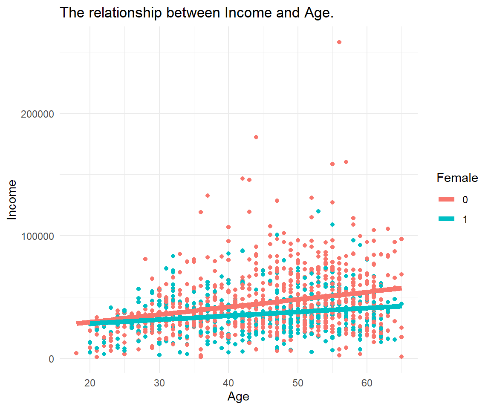
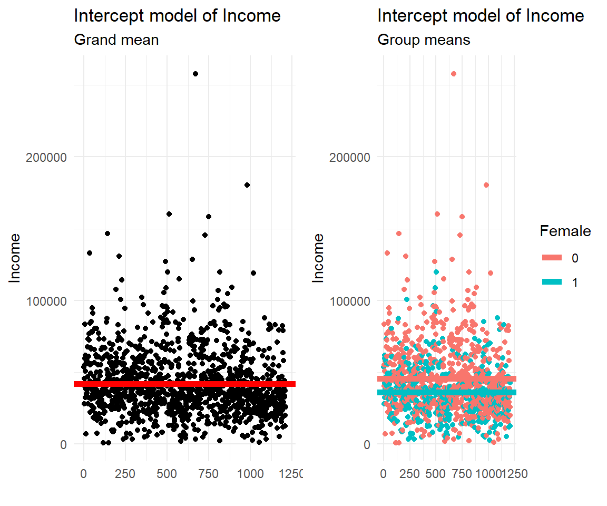
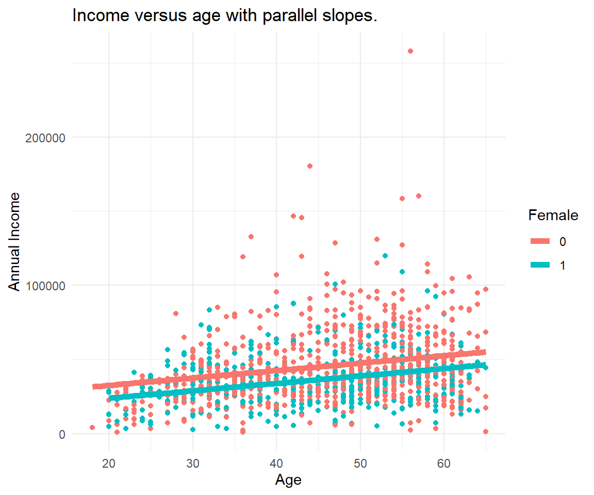
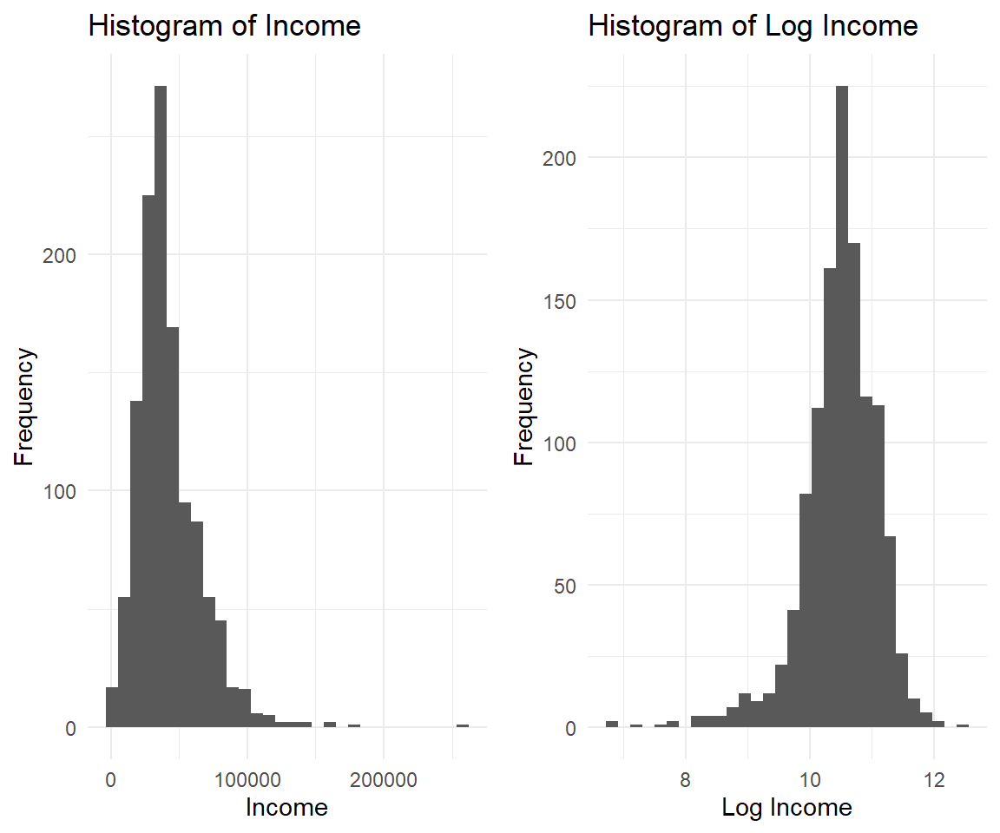

6.2 Linear Models
Simple and multiple linear regression
6.2.1 What You Deserve Is What You Get
Do you believe that people get what they deserve? The statement "what you deserve is what you get" is a controversial one. It can be interpreted such that individuals are entirely responsible for their own outcomes and that they receive exactly what they deserve based on their efforts, abilities, and choices. This view assumes a meritocratic (performance-oriented) system where everyone has an equal opportunity to succeed based on their merit, and rewards are distributed accordingly.
We investigate annual income and how it is determined. The famous Mincer Equation is a single-equation model that explains wage income as a function of schooling and experience. The equation suggests that higher levels of education and experience are positively associated with earnings, and the coefficients can be estimated using statistical methods to quantify the magnitude of these relationships. When everybody has access to schooling and the equal opportunities on the labour market, better school outcomes and work experience may be determined by people efforts, abilities, and choices.
6.2.2 Data & Sample
We use SOEP practice data to analyse yearly income. The analysis is restricted to people who are fulltime employed (Emp == 1) in the working age (Age <= 65) who report an annual income from main job of more than one Euro (Income > 1). We analyse the most recent cross-section of the data (syear == 2019). We drop a few cases with missing information, thus conduct a complete case analysis.
master <- read_dta("https://github.com/MarcoKuehne/marcokuehne.github.io/blob/main/data/SOEP/practice_en/practice_dataset_eng.dta?raw=true")
# The data comes with Stata labels that do not work with all tidyverse commands
soep <- remove_all_labels(master)
# Rename German to English variable names
soep <- soep %>%
rename("Age" = "alter",
"Income" = "einkommenj1",
"NACE2" = "branche",
"Persons in HH" = "anz_pers",
"Kids" = "anz_kind",
"Education" = "bildung",
"Health" = "gesund_org",
"Satisfaction" = "lebensz_org",
"Emp" = "erwerb")
# Explicitly define the gender variable as a factor
soep <- soep %>% mutate(Female = factor(sex))
# Round annual income to two digits
soep <- soep %>% mutate(Income = round(Income, 2))
# Build the estimation sample based on the topic
soep <- soep %>%
filter(Emp == 1) %>%
filter(Age <= 65) %>%
filter(Income > 1) %>%
filter(syear == 2019)
# Conduct a complete case analysis
soep <- soep %>% filter(complete.cases(.))The estimation sample looks like this:
DT::datatable(caption = "The SOEP estimation sample: employed respondents aged up to 65 in 2019, one row each, complete cases only.", soep[,-c(1:3,8,13:15)], rownames = FALSE)The descriptive statistics of the sample look like this:
datasummary_skim(title = "Descriptive statistics for the estimation sample: income, age, children, health and satisfaction, with their ranges and distributions.", soep[,-c(1,2,8,13:15)])| Unique | Missing Pct. | Mean | SD | Min | Median | Max | Histogram | |
|---|---|---|---|---|---|---|---|---|
| sex | 2 | 0 | 0.4 | 0.5 | 0.0 | 0.0 | 1.0 | ![](data:image/png;base64, iVBORw0KGgoAAAANSUhEUgAABLAAAAGQCAMAAACJa2lsAAAABlBMVEUAAAD///+l2Z/dAAAG8klEQVR4nO3UsXEDAQwDwVf/TTtGZgeyjprdCsgA97wAjng+fQDAbwkWcIZgAWcIFnCGYAFnCBZwhmABZwgWcIZgAWcIFnCGYAFnCBZwhmABZ/wpWM8/e9fTwE2CBZwhWMAZggWcIVjAGYIFnCFYwBmCBZwhWMAZggWcIVjAGYIFnCFYwBmCBZwhWMAZggWcIVjAGYIFnCFYwBmCBZwhWMAZggWcIVjAGYIFnCFYwBmCBZwhWMAZggWcIVjAGYIFnCFYwBmCBZwhWMAZggWcIVjAGYIFnCFYwBmCBZwhWMAZggWcIVjAGYIFnCFYwBmCBZwhWMAZggWcIVjAGYIFnCFYwBmCBZwhWMAZggWcIVjAGYIFnCFYwBmCBZwhWMAZggWcIVjAGYIFnCFYwBmCBZwhWMAZggWcIVjAGYIFnCFYwBmCBZwhWMAZggWcIVjAGYIFnCFYwBmCBZwhWMAZggWcIVjAGYIFnCFYwBmCBZwhWMAZggWcIVjAGYIFnCFYwBmCBZwhWMAZggWcIVjAGYIFnCFYwBmCBZwhWMAZggWcIVjAGYIFnCFYwBmCBZwhWMAZggWcIVjAGYIFnCFYwBmCBZwhWMAZggWcIVjAGYIFnCFYwBmCBZwhWMAZggWcIVjAGYIFnCFYwBmCBZwhWMAZggWcIVjAGYIFnCFYwBmCBZwhWMAZggWcIVjAGYIFnCFYwBmCBZwhWMAZggWcIVjAGYIFnCFYwBmCBZwhWMAZggWcIVjAGYIFnCFYwBmCBZwhWMAZggWcIVjAGYIFnCFYwBmCBZwhWMAZggWcIVjAGYIFnCFYwBmCBZwhWMAZggWcIVjAGYIFnCFYwBmCBZwhWMAZggWcIVjAGYIFnCFYwBmCBZwhWMAZggWM8s4FCxjlnQsWMMo7FyxglHcuWMAo71ywgFHeuWABo7xzwQJGeeeCBYzyzgULGOWdCxYwyjsXLGCUdy5YwCjvXLCAUd65YAGjvHPBAkZ554IFjPLOBQsY5Z0LFjDKOxcsYJR3LljAKO9csIBR3rlgAaO8c8ECRnnnggWM8s4FCxjlnQsWMMo7FyxglHcuWMAo71ywgFHeuWABo7xzwQJGeeeCBYzyzgULGOWdCxYwyjsXLGCUdy5YwCjvXLCAUd65YAGjvHPBAkZ554IFjPLOBQsY5Z0LFjDKOxcsYJR3LljAKO9csIBR3rlgAaO8c8ECRnnnggWM8s4FCxjlnQsWMMo7FyxglHcuWMAo71ywgFHeuWABo7xzwQJGeeeCBYzyzgULGOWdCxYwyjsXLGCUdy5YwCjvXLCAUd65YAGjvHPBAkZ554IFjPLOBQsY5Z0LFjDKOxcsYJR3LljAKO9csIBR3rlgAaO8c8ECRnnnggWM8s4FCxjlnQsWMMo7FyxglHcuWMAo71ywgFHeuWABo7xzwQJGeeeCBYzyzgULGOWdCxYwyjsXLGCUdy5YwCjvXLCAUd65YAGjvHPBAkZ554IFjPLOBQsY5Z0LFjDKOxcsYJR3LljAKO9csIBR3rlgAaO8c8ECRnnnggWM8s4FCxjlnQsWMMo7FyxglHcuWMAo71ywgFHeuWABo7xzwQJGeeeCBYzyzgULGOWdCxYwyjsXLGCUdy5YwCjvXLCAUd65YAGjvHPBAkZ554IFjPLOBQsY5Z0LFjDKOxcsYJR3LljAKO9csIBR3rlgAaO8c8ECRnnnggWM8s4FCxjlnQsWMMo7FyxglHcuWMAo71ywgFHeuWABo7xzwQJGeeeCBYzyzgULGOWdCxYwyjsXLGCUdy5YwCjvXLCAUd65YAGjvHPBAkZ554IFjPLOBQsY5Z0LFjDKOxcsYJR3LljAKO9csIBR3rlgAaO8c8ECRnnnggWM8s4FCxjlnQsWMMo7FyxglHcuWMAo71ywgFHeuWABo7xzwQJGeeeCBYzyzgULGOWdCxYwyjsXLGCUdy5YwCjvXLCAUd65YAGjvHPBAkZ554IFjPLOBQsY5Z0LFjDKOxcsYJR3LljAKO9csIBR3rlgAaO8c8ECRnnnggWM8s4FCxjlnQsWMMo7FyxglHcuWMAo71ywgFHeuWABo7xzwQJGeeeCBYzyzgULGOWdCxYwyjsXLGCUdy5YwCjvXLCAUd65YAGjvHPBAkZ554IFjPLOBQsY5Z0LFjDKOxcsYJR3LljAKO9csIBR3rlgAaO8c8ECRnnnggWM8s4FCxjlnQsWMMo7FyxglHcuWMAo71ywgFHeuWABo7xzwQJGeeeCBYzyzgULGOWdCxYwyjsXLGCUdy5YwCjvXLCAUd55OljA93tbsAA+SbCAMwQLOEOwgDMECzhDsIAzBAs4Q7CAMwQLOEOwgDMECzhDsIAzBAs4Q7CAM34ACd9SkxOaeBAAAAAASUVORK5CYII=) |
| Age | 47 | 0 | 45.4 | 11.2 | 18.0 | 47.0 | 65.0 | ![](data:image/png;base64, iVBORw0KGgoAAAANSUhEUgAABLAAAAGQCAMAAACJa2lsAAAABlBMVEUAAAD///+l2Z/dAAAOT0lEQVR4nO3UgZHsOg4DwHf5J30RWH9ZIxqU3B0BDQv49z+AQ/xLHwDwVwYLOIbBAo5hsIBjGCzgGAYLOIbBAo5hsIBjGCzgGAYLOIbBAo5hsIBjGCzgGAYLyv69LP29c4gCygxWiiigzGCliALKDFaKKKDMYKWIAsoMVooooMxgpYgCygxWiiigzGCliALKDFaKKKDMYKWIAsoMVooooMxgpYgCygxWiiigzGCliALKDFaKKKDMYKWIAsoMVooooMxgpYgCygxWiiigzGCliALKDFaKKKDMYKWIAsoMVooooMxgpYgCygxWiiigzGCliALKDFaKKKDMYKWIAsoMVooooMxgpYgCygxWiiigzGCliALKDFaKKKDMYKWIAsoMVooooMxgpYgCygxWiiigzGCliALKDFaKKKDMYKWIAsoMVooooMxgpYgCygxWiiigzGCliALKDFaKKKDMYKWIAsoMVooooMxgpYgCygxWiiigzGCliALKDFaKKKDMYKWIAsoMVooooMxgpYgCygxWiiigzGCliALKDFaKKKDMYKWIAsoMVooooMxgpYgCygxWiiigzGCliALKDFaKKKDMYKWIAsoMVooooMxgpYgCygxWiii4wdsL8rJ0vHOIghukF6VZOt45RMEN0ovSLB3vHKLgBulFaZaOdw5RcIP0ojRLxzuHKLhBelGapeOdQxTcIL0ozdLxziEKbpBelGbpeOcQBTdIL0qzdLxziIIbpBelWTreOUTBDdKL0iwd7xyi4AbpRWmWjncOUXCD9KI0S8c7hyi4QXpRmqXjnUMU3CC9KM3S8c4hCm6QXpRm6XjnEAU3SC9Ks3S8c4iCG6QXpVk63jlEwQ3Si9IsHe8couAG6UVplo53DlFwg/SiNEvHO4couEF6UZql451DFNwgvSjN0vHOIQpukF6UZul45xAFN0gvSrN0vHOIghukF6VZOt45RMEN0ovSLB3vHKLgBulFaZaOdw5RcIP0ojRLxzuHKLhBelGapeOdQxTcIL0ozdLxziEKbpBelGbpeOcQBTdIL0qzdLxziIIbpBelWTreOUTBDdKL0iwd7xyi4AbpRWmWjncOUXCD9KLcJf03FybfBn+Vrvhd0n9zYfJt8Ffpit8l/TcXJt8Gf5Wu+F3Sf3Nh8m3wV+mK3yX9Nxcm3wZ/la74XdJ/c2HybfBX6YrfJf03FybfBn+Vrvhd0n9zYfJt8Ffpit8l/TcXJt8Gf5Wu+F3Sf3Nh8m3wV+mK3yX9Nxcm3wZ/la74XdJ/c2HybfBX6YrfJf03FybfBn+Vrvhd0n9zYfJt8Ffpit8l/TcXJt8Gf5Wu+F3Sf3Nh8m3wV+mK3yX9Nxcm3wZ/la74XdJ/c2HybfBX6YrfJf03FybfBn+Vrvhd0n9zYfJt8Ffpit8l/TcXJt8Gf5Wu+F3Sf3Nh8m3wV+mK3yX9Nxcm38a50pXjF+nXszD5Ns6Vrhy/SL+ehcm3ca505fhF+vUsTL6Nc6Urxy/Sr2dh8m2cK105fpF+PQuTb+Nc6crxi/TrWZh8G+dKV45fpF/PwuTbOFe6cvwi/XoWJt/GudKV4xfp17Mw+TbOla4cv0i/noXJt3GudOX4Rfr1LEy+jXOlK8cv0q9nYfJtnCtdOX6Rfj0Lk2/jXOnK8Yv061mYfBvnSleOX6Rfz8Lk2zhXunL8Iv16FibfxrnSleMX6dezMPk2zpWuHL9Iv56FybdxrnTl+EX69SxMvo1zpSvHL9KvZ2HybZwrXTl+kX49C5Nv41zpyvGL9OtZmHwb50pXjl+kX8/C5Ns4V7py/CL9ehYm38a50pXjF+nXszD5Ns6Vrhy/SL+ehcm3ca505fhF+vUsTL6Nc6Urxy/Sr2dh8m2cK105fpF+PQuTb+Nc6crxi/TrWZh8G+dKV45fpF/PwuTb2CjdAQ6SfqwLk29jo3QHOEj6sS5Mvo2N0h3gIOnHujD5NjZKd4CDpB/rwuTb2CjdAQ6SfqwLk29jo3QHOEj6sS5Mvo2N0h3gIOnHujD5NjZKd4CDpB/rwuTb2CjdAQ6SfqwLk29jo3QHOEj6sS5Mvo2N0h3gIOnHujD5NjZKd4CDpB/rwuTb2CjdAQ6SfqwLk29jo3QHOEj6sS5Mvu1u6UcJT9LdWJh8293SjxKepLuxMPm2u6UfJTxJd2Nh8m13Sz9KeJLuxsLk2+6WfpTwJN2Nhcm33S39KOFJuhsLk2+7W/pRwpN0NxYm33a39KOEJ+luLEy+7W7pRwlP0t1YmHzb3dKPEp6ku7Ew+ba7pR8lPEl3Y2HybXdLP0p4ku7GwuTb7pZ+lPAk3Y2FybfdLf0o4Um6GwuTb7tb+lHCk3Q3Fibfdrf0o4Qn6W4sTL7tbulHCU/S3ViYfNvd0o8SnqS7sTD5trulHyU8SXdjYfJtd0s/SniS7sbC5Nvuln6U8CTdjYXJt90t/SjhSbobC5Nvu1v6UcKTdDcWJt92t/SjhCfpbixMvu1u6UcJT9LdWJh8293SjxKepLuxMPm2u6UfJTxJd2Nh8m13Sz9KeJLuxsLk2+6WfpTwJN2Nhcm33S39KOFJuhsLk2+7W/pRwpN0NxYm33a39KOEJ+luLEy+7W7pRwlP0t1YmHzb3dKPEp6ku7Ew+ba7pR8lPEl3Y2HybXdLP0p4ku7GwuTb7pZ+lPAk3Y2FybfdLf0o4Um6GwuTb7tb+lHCk3Q3Fibfdrf0o4Qn6W4sTL7tbulHCU/S3ViYfNvd0o8SnqS7sTD5trulHyU8SXdjYfJtd0s/SniS7sbC5Nvuln6U8CTdjYXJt90t/SjhSbobC5Nvu1v6UcKTdDcWJt92t/SjhCfpbixMvu1u6UcJT9LdWJh8293SjxKGKNWmq4/8h/QrgSFKtenqI/8h/UpgiFJtuvp4nvRvg28qtbSr/udJ/zb4plJLu+p/nvRvg28qtbSr/udJ/zb4plJLu+p/nvRvg28qtbSr/udJ/zb4plJLu+p/nvRvg28qtbSr/udJ/zb4plJLu+p/nvRvg28qtbSr/udJ/zb4plJLu+p/nvRvg28qtbSr/udJ/zb4plJLu+p/nvRvg28qtbSr/udJ/zb4plJLu+p/nvRvg28qtbSr/udJ/zb4plJLu+p/nvRvg28qtbSr/udJ/zb4plJLu+p/nvRvg28qtbSr/udJ/zb4plJLu+p/nvRvg28qtbSr/udJ/zb4plJLu+p/nvRvg28qtbSr/udJ/zb4plJLu+p/nvRvg28qtbSr/udJ/zb4plJLu+p/nvRvg28qtbSr/udJ/zb4plJLu+p/nvRvg28qtbSr/udJ/zb4plJLu+p/nvRvg28qtbSr/udJ/zb4plJLu+p/nvRvg28qtbSr/udJ/zb4plJLu+p/nvRvg28qtbSr/udJ/zb4plJLu+p/nvRvg28qtbSr/udJ/zb4plJLu+p/nvRvg28qtbSr/udJ/zb4plJLu+p/nvRvg28qtbSr/udJ/zb4plJLu+p/nvRvg28qtbSr/udJ/zb4plJLu+p/nvRvg28qtbSr/udJ/zb4plJLu+p/nvRvg28qtbSr/udJ/zb4plJLu+p/nvRvg28qtbSr/udJ/zb4plJLu+p/nvRvg28qtbSr/udJ/zb4plJLu+p/nvRvg28qtbSr/udJ/zb4plJLu+p/nvRvg28qtbSr/udJ/zb4plJLu+p/nvRvg28qtbSr/udJ/zb4plJLu+p/nvRvg28qtbSr/hukcwReUBqFrrXZIJ0j8ILSKHStzQbpHIEXlEaha202SOcIvKA0Cl1rs0E6R+AFpVHoWpsN0jkCLyiNQtfabJDOEXhBaRS61maDdI7AC0qj0LU2G6RzBF5QGoWutdkgnSPwgtIodK3NBukcgReURqFrbTZI5wi8oDQKXWuzQTpH4AWlUehamw3SOQIvKI1C19pskM4ReEFpFLrWZoN0jsALSqPQtTYbpHMEXlAaha612SCdI/CC0ih0rc0G6RyBF5RGoWttNkjnCLygNApda7NBOkfgBaVR6FqbDdI5Ai8ojULX2myQzhF4QWkUutZmg3SOwAtKo9C1NhukcwReUBqFrrXZIJ0j8ILSKHStzQbpHIEXlEaha202SOcIvKA0Cl1rs0E6R+AFpVHoWpsN0jkCLyiNQtfabJDOEXhBaRS61maDdI7AC0qj0LU2G6RzBF5QGoWutdkgnSPwgtIodK3NBukcgReURqFrbTZI5wi8oDQKXWuzQTpH4AWlUehamw3SOQIvKI1C19pskM4ReEFpFLrWZoN0jsALSqPQtTYbpHMEXlAaha612SCdI/CC0ih0rc0G6RyBF5RGoWttNkjnCLygNApda7NBOkfgBaVR6FqbDdI5Ai8ojULX2myQzhF4QWkUutZmg3SOwAtKo9C1NhukcwReUBqFrrXZIJ0j8ILSKHStzQbpHIEXlEaha202SOcIvKA0Cl1rs0E6R+AFpVHoWpsN0jkCLyiNQtfabJDOEXhBaRS61maDdI7AC0qj0LU2G6RzBF5QGoWutdkgnSPwgtIodK3NBukcgReURqFrbTZI5wi8oDQKXWuzQTpH4AWlUehamw3SOQIvKI1C19pskM4ReEFpFLrWZoN0jsALSqPQtTYbpHMEXlAaha612SCdI/CC0ih0rc0G6RyBF5RGoWttNkjnCLygNApda7NBOkfgBaVR6FqbDdI5Ai8ojULX2myQzhF4QWkUutZmg3SOwAtKo9C1NhukcwReUBoFCwIkGSzgGAYLOIbBAo5hsIBjGCzgGAYLOIbBAo5hsIBjGCzgGAYLOIbBAo5hsIBjGCzgGAYLOIbBAo7RNlgASQYLOIbBAo5hsIBjGCzgGAYLOIbBAo5hsIBjGCzgGAYLOIbBAo5hsIBjGCzgGAYLOMb/ATbv6oymfW5MAAAAAElFTkSuQmCC) |
| Persons in HH | 10 | 0 | 2.9 | 1.4 | 1.0 | 3.0 | 10.0 | ![](data:image/png;base64, iVBORw0KGgoAAAANSUhEUgAABLAAAAGQCAMAAACJa2lsAAAABlBMVEUAAAD///+l2Z/dAAAHUklEQVR4nO3UwY0gRxIEwaX+SvN9jwZ2CheYdMJMgkZFtv/5ByDiz29/AMDfEiwgQ7CADMECMgQLyBAsIEOwgAzBAjIEC8gQLCBDsIAMwQIyBAvI+FGw/vyi1QMAHYIFZAgWkCFYQIZgARmCBWQIFpAhWECGYAEZggVkCBaQIVhAhmABGYIFZAgWkCFYQIZgARmCBWQIFpAhWECGYAEZggVkCBaQIVhAhmABGYIFZAgWkCFYQIZgARmCBWQIFpAhWECGYAEZggVkCBaQIVhAhmABGYIFZAgWkCFYQIZgARmCBWQIFpAhWECGYAEZggVkCBaQIVhAhmABGYIFZAgWkCFYQIZgARmCBWQIFpAhWECGYAEZggVkCBaQIVhAhmABGYIFZAgWkCFYQIZgARmCBWQIFpAhWECGYAEZggVkCBaQIVhAhmABGYIFZAgWkCFYQIZgARmCBWQIFpAhWECGYAEZggVkCBaQIVhAhmABGYIFZAgWkCFYQIZgARmCBWQIFpAhWECGYAEZggVkCBaQIVhAhmABGYIFZAgWkCFYQIZgARmCBWQIFpAhWECGYAEZggVkCBaQIVhAhmABGYIFZAgWkCFYQIZgARmCBWQIFpAhWECGYAEZggVkCBaQIVhAhmABGYIFZAgWkCFYQIZgARmCBWQIFpAhWECGYAEZggVkCBaQIVhAhmABGYIFZAgWkCFYQIZgARmCBWQIFpAhWECGYAEZggVkCBaQIVhAhmABGYIFZAgWkCFYQIZgARmCBWQIFpAhWECGYAEZggVkCBaQIVhAhmABGYIFZAgWkCFYQIZgARmCBWQIFpAhWECGYAEZggVkCBaQIVhAhmABGYIFZAgWkCFYQIZgARmCBWQIFpAhWECGYAEZggVkCBaQIVhAhmABGYIFZAgWkCFYQIZgARmCBWQIFpAhWECGYAEZggVkCBaQIVhAhmABGYIFZAgWkCFYQIZgARmCBWQIFpAhWECGYAEZggVkCBaQIVhAhmABGYIFZAgWkCFYQIZgARmCBWQIFpAhWECGYAEZggVkZIL1m1aPD/yMYP2F1eMDPyNYf2H1+MDPCNZfWD0+8DOC9RdWjw/8jGDdttodkgTrttXukCRYt612hyTBum21OyQJ1m2r3SFJsG5b7Q5JgnXbandIEqzbVrtDkmDdttodkgTrttXukCRYt612hyTBum21OyQJ1m2r3SFJsG5b7Q5JgnXbandIEqzbVrtDkmDdttodkgTrttXukCRYt612hyTBum21OyQJ1m2r3SFJsG5b7Q5JgnXbandIEqzbVrtDkmDdttodkgTrttXukCRYt612hyTBum21OyQJ1m2r3SFJsG5b7Q5JgnXbandIEqzbVrtDkmDdttodkgTrttXukCRYt612hyTBum21OyQJ1m2r3SFJsG5b7Q5JgnXbandIEqzbVrtDkmDdttodkgTrttXukCRYt612hyTBum21OyQJ1m2r3SFJsG5b7Q5JgnXbandIEqzbVrtDkmDdttodkgTrttXukCRYt612hyTBum21OyQJ1m2r3SFJsG5b7Q5JgnXbandIEqzbVrtDkmDdttodkgTrttXukCRYt612hyTBum21OyQJ1m2r3SFJsG5b7Q5JgnXbandIEqzbVrtDkmDdttodkgTrttXukCRYt612hyTBum21OyQJ1m2r3SFJsG5b7Q5JgnXbandIEqzbVrtDkmDdttodkgTrttXukCRYt612hyTBum21OyQJ1m2r3SFJsG5b7Q5JgnXbandIEqzbVrtDkmDdttodkgTrttXukCRYt612hyTBum21OyQJFl9WNwfPBIsvq5uDZ4LFl9XNwTPB4svq5uCZYPFldXPwTLD4sro5eCZYfFndHDwTLL6sbg6eCRZfVjcHzwSLL6ubg2eCxZfVzcEzweLL6ubgmWDxZXVz8Eyw+LK6OXgmWHxZ3Rw8Eyy+rG4OngkWX1Y3B88Eiy+rm4NngsWX1c3BM8Hiy+rm4Jlg8WV1c/BMsPiyujl4Jlh8Wd0cPBMsvqxuDp4JFl9WNwfPBIsvq5uDZ4LFl9XNwTPB4svq5uCZYPFldXPwTLD4sro5eCZYfFndHDwTLL6sbg6eCRZfVjcHzwSLL6ubg2eCxZfVzcEzweLL6ubgmWDxZXVz8Eyw+LK6OXgmWHxZ3Rw8Eyy+rG4OngkWX1Y3B88Eiy+rm4NngsWX1c3BM8Hiy+rm4Jlg8WV1c/BMsPiyujl4Jlh8Wd0cPBMsvqxuDp4JFl9WNwfPBIsvq5uDZ4LFl9XNwTPB4svq5uCZYHHQ6typEywOWp07dYLFQatzp06wOGh17tQJFgetzp06weKg1blTJ1gctDp36gSLg1bnTp1gcdDq3KkTLA5anTt1gsVBq3OnTrDgf6x+Nf4fBAuuWP3l/yGCBVes/vL/EMECfpVgARmCBWTMggXwmwQLyBAsIEOwgAzBAjIEC8gQLCBDsIAMwQIyBAvIECwgQ7CADMECMgQLyPgX+0zXRufXsYUAAAAASUVORK5CYII=) |
| Kids | 8 | 0 | 0.7 | 1.1 | 0.0 | 0.0 | 8.0 | ![](data:image/png;base64, iVBORw0KGgoAAAANSUhEUgAABLAAAAGQCAMAAACJa2lsAAAABlBMVEUAAAD///+l2Z/dAAAGJklEQVR4nO3UsXEcAQwEQSr/pOW/BVXdkTtUdwQLGPP1ByDi66cHAFwJFpAhWECGYAEZggVkCBaQIVhAhmABGYIFZAgWkCFYQIZgARmCBWT8U7C+HvHWKcBvJ1hAhmABGYIFZAgWkCFYQIZgARmCBWQIFpAhWECGYAEZggVkCBaQIVhAhmABGYIFZAgWkCFYQIZgARmCBWQIFpAhWECGYAEZggVkCBaQIVhAhmABGYIFZAgWkCFYQIZgARmCBWQIFpAhWECGYAEZggVkCBaQIVhAhmABGYIFZAgWkCFYQIZgARmCBWQIFpAhWECGYAEZggVkCBaQIVhAhmABGYIFZAgWkCFYQIZgARmCBWQIFpAhWECGYAEZggVkCBaQIVhAhmABGYIFZAgWkCFYQIZgARmCBWQIFpAhWECGYAEZggVkCBaQIVhAhmABGYIFZAgWkCFYQIZgARmCBWQIFpAhWECGYAEZggVkCBaQIVhAhmABGYIFZAgWkCFYQIZgARmCBWQIFpAhWECGYAEZggVkCBaQIVhAhmABGYIFZAgWkCFYQIZgARmCBWQIFpAhWECGYAEZggVkCBaQIVhAhmABGYIFZAgWkCFYQIZgARmCBWQIFpAhWECGYAEZggVkCBaQIVhAhmABGYIFZAgWkCFYQIZgARmCBWQIFpAhWECGYAEZggVkCBaQIVhAhmABGYIFZAgWkCFYQIZgARmCBWQIFpAhWECGYAEZggVkCBaQIVhAhmABGYIFZAgWkCFYQIZgARmCBWQIFpAhWECGYAEZggVkCBaQIVhAhmABGYIFZAgWkCFYQIZgARmCBWQIFpAhWECGYAEZggVkCBaQIVhAhmABGYIFZAgWkCFYQIZgARmCBWQIFpAhWECGYAEZggVkCBaQIVhAhmABGYIFZAgWkCFYQIZgARmCBWQIFpAhWECGYAEZggVkCBaQIVhAhmABGYIFZAgWkCFYQIZgARmCBWQIFpAhWECGYAEZggVkCBaQIVhAhmABGYIFZAgWkCFYQIZgARmCBWQIFpAhWECGYAEZggVkCBaQIVhAhmABGYIFZAgWkCFYQIZgARmCBWQIFpAhWECGYAEZggVkCBaQIVhAhmABGYIFZAgWkCFYQIZgARmCBWQIFpAhWECGYAEZggVkCBaQIVhAhmABGYIFZAgWkCFYQIZgARmCBWQIFpAhWECGYAEZggVkCBaQIVhAhmABGYIFZAgWkCFYQIZgARmCBWQIFpAhWECGYAEZggVk/ECwnvHWQ4BdggVkCBaQIVhAhmABGYIFZAgWkCFYQMZ/HayhKcCBYG1MAQ4Ea2MKcCBYG1OAA8HamAIcCNbGFOBAsDamAAeCtTEFOBCsjSnAgWBtTAEOBGtjCnAgWBtTgAPB2pgCHAjWxhTgQLA2pgAHgrUxBTgQrI0pwIFgbUwBDgRrYwpwIFgbU4ADwdqYAhwI1sYU4ECwNqYAB4K1MQU4EKyNKcCBYG1MAQ4Ea2MKcCBYG1OAA8HamAIcCNbGFOBAsDamAAeCtTEFOBCsjSnAgWBtTAEOBGtjCnAgWBtTgAPB2pgCHAjWxhTgQLA2pgAHgrUxBTgQrI0pwIFgbUwBDgRrYwpwIFgbU4ADwdqYAhwI1sYU4ECwNqYAB4K1MQU4EKyNKcCBYG1MAQ4Ea2MKcCBYG1OAA8HamAIcCNbGFOBAsDamAAeCtTEFOBCsjSnAgWBtTAEOBGtjCnAgWBtTgAPB2pgCHAjWxhTgQLA2pgAHgrUxBTgQrI0pwIFgbUwBDgRrYwpwIFgbU4ADwTIFMgTLFMgQLFMgQ7BMgQzBMgUyBMsUyBAsUyBDsEyBDMEyBTIEyxTIECxTIEOwTIEMwTIFMgTLFMgQLFMgQ7BMgQzBMgUyBMsUyBAsUyBDsEyBDMEyBTIEyxTIECxTIEOwTHllyhNL4JNgmfLKlCeWwCfBMuWVKU8sgU+CZcorU55YAp8Ey5RXpjyxBD4JlimvTHliyRJf2SBYprwy5YklpvBJsEx5ZcoTS0xZ9/1fyQYL+B1eCxbATxIsIEOwgAzBAjIEC8gQLCBDsIAMwQIyBAvIECwgQ7CADMECMgQLyBAsIOMv7bWkbXlhc9kAAAAASUVORK5CYII=) |
| Education | 16 | 0 | 12.9 | 2.8 | 7.0 | 12.0 | 18.0 | ![](data:image/png;base64, iVBORw0KGgoAAAANSUhEUgAABLAAAAGQCAMAAACJa2lsAAAABlBMVEUAAAD///+l2Z/dAAAPRUlEQVR4nO3U0bXlMAxC0Tv9Nz0faeDJywJknV1BhAm/fwAwxM/9AQDwVwwWgDEYLABjMFgAxmCwAIzBYAEYg8ECMAaDBWAMBgvAGAwWgDEYLABjMFgAxmCwAIzBYA33k3BfCXyo4nAMFjahisMxWNiEKg7HYGETqjgcg4VNqOJwDBY2oYrDMVjYhCoOx2BhE6o4HIOFTajicAwWNqGKwzFY2IQqDsdgYROqOByDhU2o4nAMFjahisMxWNiEKg7HYGETqjgcg4VNqOJwDBY2oYrDMVjYhCoOx2BhE6o4HIOFTajicAwWNqGKwzFY2IQqDsdgYROqOByDhU2o4nAMFjahisMxWNiEKg7HYGETqjgcg4VNqOJwDBY2oYrDMVjYhCoOx2BhE6o4HIOFTajicAwWNqGKwzFY2IQqDsdgYROqOByDhU2o4nAMFjahisMxWNiEKg7HYGETqjgcg4VNqOJwDBY2oYrDMVjYhCoOx2BhE6o4HIOFTajicAwWNqGKwzFY2IQqDsdgYROqOByDhU2o4nAMFjahisMxWNiEKg7HYGETqjgcg4VNqOJwDBY2oYrDMVjYhCoOx2BhE6o4HIOFTajicAwWNqGKwzFY2IQqDsdgYROqOByDhU2o4nAMFjahisMxWNiEKg7HYGETqjgcg4VNqOJwDBY2oYrDMVjYhCoOx2BhE6o4HIOFTajicAwWNqGKwzFY2IQqDsdgYROqOByDhU2o4nAMFjahisMxWNiEKg7HYGETqjgcg4VNqOJwDBY2oYrDMVjYhCoOx2BhE6o4HIOFTajicAwWNqGKwzFY2IQqDsdgYROqOByDhU2o4nAMFjahisMxWNiEKg7HYGETqjgcg4VNqOJwDBY2oYrDMVjYhCoOx2BhE6o4HIOFTajicAwWNqGKwzFY2IQqDsdgYROqOByDhU2o4nAMFjahisMxWNiEKg7HYGETqjgcg4VNqOJwDBY2oYrDMVjYhCoOx2BhE6o4HIOFTajicAwWNqGKwzFY2IQqDsdgYROqOByDhU2o4nAMFjahisMxWNiEKg7HYGETqjgcg4VNqOJwDBY2oYrDMVjYhCoOx2BhE6o4HIOFTajicAwWNqGKwzFY2IQqDsdgYROqOByDhU2o4nAMFjahisMxWNiEKg7HYGETqjgcg4VNqOJwDBY2oYrDMVjYhCoOx2BhE6o4HIOFTajicAwWNqGKwzFY2IQqDsdgYROqOByDhU2o4nAMFjahisMxWNiEKg7HYGETqjgcg4VNqOJwDBY2oYrDMVjYhCoOx2BhE6o4HIOFTajicAwWNqGKwzFY2IQqDsdgYROqOByDhU2o4nAMFjahisMxWNiEKg7HYGETqjgcg4VNqOJwDBY2oYrDMVjYhCoOx2BhE6rYR7MlEu4ogQ9V7ONemYvcUQIfqtjHvTIXuaMEPlSxj3tlLnJHCXyoYh/3ylzkjhL4UMU+7pW5yB0l8KGKfdwrc5E7SuBDFfu4V+Yid5TAhyr2ca/MRe4ogQ9V7ONemYvcUQIfqtjHvTIXuaMEPlSxj3tlLnJHCXyoYh/3ylzkjhL4UMU+7pW5yB0l8KGKfdwrc5E7SuBDFfu4V+Yid5TAhyr2ca/MRe4ogQ9V7ONemYvcUQIfqtjHvTIXuaMEPlSxj3tlLnJHCXyoYh/3ylzkjhL4UMU+7pW5yB0l8KGKfdwrc5E7SuBDFfu4V+Yid5TAhyr2ca/MRe4ogQ9V7ONemYvcUQIfqtjHvTIXuaMEPlSxj3tlLnJHCXyoYh/3ylzkjhL4UMU+7pW5yB0l8KGKfdwrc5E7SuBDFfu4V+Yid5TAhyr2ca/MRe4ogQ9V7ONemYvcUQIfqtjHvTIXuaMEPlSxj3tlLnJHCXyoYh/3ylzkjhL4UMU+7pW5yB0l8KGKfdwrc5E7SuBDFfu4V+Yid5TAhyr2ca/MRe4ogQ9V7ONemYvcUQIfqtjHvTIXuaOER167qGIfzWtLuKOER167qGIfzWtLuKOER167qGIfzWtLuKOER167qGIfzWtLuKOER167qGIfzWtLuKOER167qGIfzWtLuKOER167qGIfzWtLuKOER167qGIfzWtLuKOER167qGIfzWtLuKOER167qGIfzWtLuKOER167qGIfzWtLuKOER167qGIfzWtLuKOER167qGIfzWtLuKOER167qGIfzWtLuKOER167qGIfzWtLuKOER167qGIfzWtLuKOER167qGIfzWtLuKOER167qGIfzWtLuKOER167qGIfzWtLuKOER167qGIfzWtLuKOER167qGIfzWtLuKOER167qGIfzWtLuKOER167qGIfzWtLuKOER167qGIfzWtLuKOER167qGIfzWtLuKOER167qGIfzWtLuKOER167qGIfzWtLuKOER167qGIfzWtLuKOER167qGIfzWtLuKOER167qGIfzWtLuKOER167qGIfzWtLuKOER167qGIfzWtLuKOER167qGIfzWtLuKOER167qGIfzWtLuKOER167qGIfzWtLuKOER167qGIfzWtLuKOER167qGIfzWtLuKOER167qGIfzWtLuKOER167qGIfzWtLuKOER167qGIfzWtLuKOER167qGIfzWtLuKOER167qGIfzWtLuKOER167qGIfzWtLuKOER167qGIfzWtLuKOER167qGIfzWtLuKOER167qGIfzWtLuKOER167qGIfzWtLuKOER167qGIfzWtLuKOER167qGIfzWtLuKOER167qGIfzWtLuKOER167qGIfzWtLuKOER167qGIfzWtLuKOER167qGIfzWtLuKOER167qGIfzWtLuKOER167qGIfzWtLuKOER167qGIfzWtLuKOER167qGIfzWtLuKOER167qGIfzWtLuKO8hrhK8uJ6J9s8mteWcEd5DXGV5MX1TrZ5NK8t4Y7yGuIqyYvrnWzzaF5bwh3lNcRVkhfXO9nm0by2hDvKa4irJC+ud7LNo3ltCXeU1xBXSV5c72SbR/PaEu4oryGukry43sk2j+a1JdxRXkNcJXlxvZNtHs1rS7ijvIa4SvLieifbPJrXlnBHeQ1xleTF9U62eTSvLeGO8hriKsmL651s82heW8Id5TXEVZIX1zvZ5tG8toQ7ymuIqyQvrneyzaN5bQl3lNcQV0leXO9km0fz2hLuKK8hrpK8uN7JNo/mtSXcUV5DXCV5cb2TbR7Na0u4o7yGuEry4non2zya15ZwR3kNcZXkxfVOtnk0ry3hjvIa4irJi+udbPNoXlvCHeU1xFWSF9c72ebRvLaEO8priKskL653ss2jeW0Jd5TXEFdJXlzvZJtH89oS7iivIa6SvLjeyTaP5rUl3FFeQ1wleXG9k20ezWtLuKO8hrhK8uJ6J9s8mteWcEd5DXGV5MX1TrZ5NK8t4Y7yGuIqyYvrnWzzaF5bwh3lNcRVkhfXO9nm0by2hDvKa4irJC+ud7LNo3ltCXeU1xBXSV5c72SbR/PaEu4oryGukry43sk2j+a1JdxRXkNcJXlxvZNtHs1rS7ijvIa4SvLieifbPJrXlnBHeQ1xleTF9U62eTSvLeGO8hriKsmL651s82heW8Id5TXEVZIXV162eRllXyKhiEuCuEry4srLNi+j7EskFHFJEFdJXlx52eZllH2JhCIuCeIqyYsrL9u8jLIvkVDEJUFcJXlx5WWbl1H2JRKKuCSIqyQvrrxs8zLKvkRCEZcEcZXkxZWXbV5G2ZdIKOKSIK6SvLjyss3LKPsSCUVcEsRVkhdXXrZ5GWVfIqGIS4K4SvLiyss2L6PsSyQUcUkQV0leXHnZ5mWUfYmEIi4J4irJiysv27yMsi+RUMQlQVwleXHlZZuXUfYlEoq4JIirJC+uvGzzMsq+REIRlwRxleTFlZdtXkbZl0go4pIgrpK8uPKyzcso+xIJRVwSxFWSF1detnkZZV8ioYhLgrhK8uLKyzYvo+xLJBRxSRBXSV5cednmZZR9iYQiLgniKsmLKy/bvIyyL5FQxCVBXCV5ceVlm5dR9iUSirgkiKskL668bPMyyr5EQhGXBHGV5MWVl21eRtmXSBBXiSIuiby48rLNyyj7EgniKlHEJZEXV162eRllXyJBXCWKuCTy4srLNi+j7EskiKtEEZdEXlx52eZllH2JBHGVKOKSyIsrL9u8jLIvkSCuEkVcEnlx5WWbl1H2JRLEVaKISyIvrrxs8zLKvkSCuEoUcUnkxZWXbV5G2ZdIEFeed96k9EVdpx7Lyyj7EgniyvPOm5S+qOvUY3kZZV8iQVx53nmT0hd1nXosL6PsSySIK887b1L6oq5Tj+VllH2JBHHleedNSl/UdeqxvIyyL5EgrjzvvEnpi7pOPZaXUfYlEsSV5503KX1R16nH8jLKvkSCuPK88yalL+o69VheRtmXYKl3Klz6oq5Tj+VllH0JlnqnwqUv6jr1WF5G2ZdgqXcqXPqirlOP5WWUfQmWeqfCpS/qOvVYXkbZl2Cpdypc+qKuU4/lZZR9CZZ6p8KlL+o69VheRtmXYKl3Klz6oq5Tj+VllH0JlnqnwqUv6jr1WF5G2ZdgqXcqXPqirlOP5WWUfQmWeqfCpS/qOvVYXkbZl2Cpdypc+qKuU4/lZZR9CZZ6p8KlL+o69VheRtmXYKl3Klz6oq5Tj+VllH0JlnqnwqUv6jr1WF5G2ZdgqXcqXPqirlOP5WWUfQmWeqfCpS/qOvVYXkbZl2Cpdypc+qKuU4/lZZR9CZZ6p8KlL+o69VheRtmXYKl3Klz6oq5Tj+VllH0JlnqnwqUv6jr1WF5G2ZdgqXcqXPqirlOP5WWUfQmWeqfCpS/qOvVYXkbZl2Cpdypc+qKuU4/lZZR9CZZ6p8KlL+o69ZgmI2C4d37G0hd1nXpMkxEw3Ds/Y+mLuk49pskIGO6dn7H0RV2nHtNkBAz3zs9Y+qKuU49pMgKGe+dnLH1R16nHNBkBw73zM5a+qOvUY5qMgOHe+RlLX9R16jFNRsBw7/yMpS/qOvWYJiMAIUrz0LU7x9zpAZAqzUPX7hxzpwdAqjQPXbtzzJ0eAKnSPHTtzjF3egCkSvPAlgBwYrAAjMFgARiDwQIwBoMFYAwGC8AYDBaAMRgsAGMwWADGaBssAHBisACMwWABGIPBAjAGgwVgDAYLwBgMFoAxGCwAYzBYAMZgsACMwWABGIPBAjAGgwVgDAYLwBj/AX9hfrsfF1p1AAAAAElFTkSuQmCC) |
| NACE2 | 77 | 0 | 57.0 | 25.9 | 1.0 | 56.0 | 97.0 | ![](data:image/png;base64, iVBORw0KGgoAAAANSUhEUgAABLAAAAGQCAMAAACJa2lsAAAABlBMVEUAAAD///+l2Z/dAAAM8ElEQVR4nO3UQY4gRw4DQPv/n17oImAuCyfQrWERES8gK1X851+Aj/jnbwcA+K8MFvAZBgv4DIMFfIbBAj7DYAGfYbCAzzBYwGcYLOAzDBbwGQYL+AyDBXyGwQI+w2BBun+O/e2+/0dyNmAYrJWcDRgGayVnA4bBWsnZgGGwVnI2YBislZwNGAZrJWcDhsFaydmAYbBWcjZgGKyVnA0YBmslZwOGwVrJ2YBhsFZyNmAYrJWcDRgGayVnA4bBWsnZgGGwVnI2YBislZwNGAZrJWcDhsFaydmAYbBWcjZgGKyVnA0YBmslZwOGwVrJ2YBhsFZyNmAYrJWcDRgGayVnA4bBWsnZgGGwVnI2YBislZwNGAZrJWcDhsFaydmAYbBWcjZgGKyVnA0YBmslZwOGwVrJ2YBhsFZyNmAYrJWcDRgGayVnA4bBWsnZgGGwVnI2YBislZwNGAZrJWcDhsFaydmAYbBWcjZgGKyVnA0YBmslZwOGwVrJ2YBhsFZyNmAYrJWcDRgGayVnA4bBWsnZgGGwVnI2YBislZwNGAZrJWcDhsFaydmAYbBWcjZgGKyVnA0YBmslZwOGwVrJ2YBhsFZyNmAYrJWcDRgGayVnA4bBWsnZgGGwVnI2YBislZwNGAZrJWcDhsFaydmAYbBWcjZgGKyVnA0YBmslZwOGwVrJ2YBhsFZyNmAYrJWcDRgGayVnA4bBWsnZgGGwVnI2YBislZwNGAZrJWcDhsFaydmAYbBWcjZgGKyVnA0YBmslZwOGwVrJ2YBhsFZyNmAYrJWcDRgGayVnA4bBWsnZgGGwVnI2YBislZwNGAZrJWcDhsFaydmAYbBWcjZgGKyVnA0YBmslZwOGwVrJ2YBhsFZyNmAYrJWcDRgGayVnA4bBWsnZgGGwVnI2YBislZwNGAZrJWcDhsFaydmAYbBWcjZgGKyVnA0YBmslZwOGwVrJ2YBhsFZyNmAYrJWcDRgGayVnA4bBWsnZgGGwVnI2YBislZwNGAZrJWcDhsFaydmAYbBWcjZgGKyVnA0YBmslZwOGwVrJ2YBhsFZyNmAYrJWcDRgGayVnA4bBWsnZgGGwVnI2YBislZwNGAZrJWcDhsFaydmAYbBWcjZgGKyVnA0YBmslZwOGwVrJ2YBhsFZyNmAYrJWcDRgGayVnA4bBWsnZgGGwVnI2YBislZwNGAZrJWcDhsFaydmAYbBWcjZgGKyVnA0YBmslZwOGwVrJ2YBhsFZyNmAYrJWcDRgGayVnA4bBWsnZgGGwVnI2YBislZwNGAZrJWcDhsFaydmAYbBWcjZgGKyVnA0YBmslZwOGwVrJ2YBhsFZyNmAYrJWcDRgGayVnA4bBWsnZgGGwVnI2YBislZwNGAZrJWcDhsFaydmAYbBWcjZgGKyVnA0YBmslZwOGwVrJ2YBhsFZyNmAYrJWcDRgGayVnA4bBWsnZgGGwVnI2YBislZztmKsglNNcydmOuQpCOc2VnO2YqyCU01zJ2Y65CkI5zZWc7ZirIJTTXMnZjrkKQjnNlZztmKsglNNcydmOuQpCOc2VnO2YqyCU01zJ2Y51X0V3u3IebyVnO9Z9Fd3tynm8lZztWPdVdLcr5/FWcrZj3VfR3a6cx1vJ2Y51X0V3u3IebyVnO9Z9Fd3tynm8lZztWPdVdLcr5/FWcrZj3VfR3a6cx1vJ2Y51X0V3u3IebyVnO9Z9Fd3tynm8lZztWPdVdLcr5/FWcrZj3VfR3a6cx1vJ2Y51X0V3u3IebyVnO9Z9Fd3tynm8lZztWPdVdLcr5/FWcrZj3VfR3a6cx1vJ2Y51X0V3u3IebyVnO9Z9Fd3tynm8lZztWPdVdLcr5/FWcrZj3VfR3a6cx1vJ2Y51X0V3u3IebyVnO9Z9Fd3tynm8lZztWPdVdLcr5/FWcrZj3VfR3a6cx1vJ2Y51X0V3u3IebyVnO9Z9Fd3tynm8lZztWPdVdLcr5/FWcrZj3VfR3a6cx1vJ2Y51X0V3u3IebyVnO9Z9Fd3tynm8lZztWPdVdLcr5/FWcrZj3VfR3a6cx1vJ2Y51X0V3u3IebyVnO9Z9Fd3tynm8lZztWPdVdLcr5/FWcrZj3VfR3a6cx1vJ2Y51X0V3u3IebyVnO9Z9Fd3tynm8lZztWPdVdLcr5/FWcrZj3VfR3a6cx1vJ2Y51X0V3u3IebyVnO9Z9Fd3tynm8lZztWPdVdLcr5/FWcrZj3VfR3a6cx1vJ2Y51X0V3u3IebyVnO9Z9Fd3tynm8lZztWPdVdLcr5/FWcrZj3VfR3a6cx1vJ2Y51X0V3u3IebyVnO9Z9Fd3tynm8lZztWPdVdLcr5/FWcrZj3VfR3a6cx1vJ2Y51X0V3u3IebyVnO9Z9Fd3tynm8lZztWPdVdLcr5/FWcrZj3VfR3a6cx1vJ2Y51X0V3u3IebyVnO9Z9Fd3tynm8lZztWPdVdLcr5/FWcrZj3VfR3a6cx1vJ2Y51X0V3u3IebyVnO9Z9Fd3tynm8lZztWPdVdLcr5/FWcrZj3VfR3a6cx1vJ2Y51X0V3u3IebyVnO9Z9Fd3tynm8lZztWPdVdLcr5/FWcrZj3VfR3a6cx1vJ2Y51X0V3u3IebyVnO9Z9Fd3tynm8lZztWPdVdLcr5/FWcrZj3VfR3a6cx1vJ2Y51X0V3u3IebyVnO9Z9Fd3tynm8lZztWPdVdLcr5/FWcrZj3VfR3a6cx1vJ2Y51X0V3u3IebyVnO9Z9Fd3tynm8lZztWPdVdLcr5/FWcrZj3VfR3a6cx1vJ2Y51X0V3u3IebyVnO9Z9Fd3tynm8lZztWPdVdLcr5/FWcrZj3VfR3a6cx1vJ2Y51X0V3u3IebyVnO9Z9Fd3tynm8lZztWPdVdLcr5/FWcrZj3VfR3a6cx1vJ2Y51X0V3u3IebyVnO9Z9Fd3tynm8lZztWPdVdLcr5/FWcrZj3VfR3a6cx1vJ2Y51X0V3u3IebyVnO9Z9Fd3tynm8lZztWPdVdLcr5/FWcrZj3VfR3a6cx1vJ2Y51X0V3u3IebyVnO9Z9Fd3tynm8lZztWPdVdLcr5/FWcrZj3VfR3a68Xne7J8nZjnVfRXe78nrd7Z4kZzvWfRXd7crrdbd7kpztWPdVdLcrr9fd7klytmPdV9Hdrrxed7snydmOdV9Fd7vyet3tniRnO9Z9Fd3tyut1t3uSnO1Y91V0tyuv193uSXK2Y91X0d2uvF53uyfJ2Y51X0V3u/J63e2eJGc71n0V3e3K63W3e5Kc7Vj3VXS3K6/X3e5JcrZj3VfR3a68Xne7J8nZjnVfRXe78nrd7Z4kZzvWfRXd7crrdbd7kpztWPdVdLcrr9fd7klytmPdV9Hdrrxed7snydmOdV9Fd7vyet3tniRnO9Z9Fd3tyut1t3uSnO1Y91V0tyuv193uSXK2Y91X0d2uvF53uyfJ2Y51X0V3u/J63e2eJGc71n0V3e3K63W3e5Kc7Vj3VXS3K6/X3e5JcrZj3VfR3a68Xne7J8nZjnVfxXW7ct2Pd9vuSXK2Y91Xcd2uXPfj3bZ7kpztWPdVXLcr1/14t+2eJGc71n0V1+3KdT/ebbsnydmOdV/Fdbty3Y932+5JcrZj3Vdx3a5c9+PdtnuSnO1Y91VctyvX/Xi37Z4kZzvWfRXX7cp1P95tuyfJ2Y51X8V1u3Ldj3fb7klytmPdV3Hdrlz34922e5Kc7Vj3VVy3K9f9eLftniRnO9Z9FdftynU/3m27J8nZjnVfxXW7ct2Pd9vuSXK2Y91Xcd2uXPfj3bZ7kpztWPdVXLcr1/14t+2eJGc71n0V1+3KdT/ebbsnydmOdV/Fdbty3Y932+5JcrZj3Vdx3a5c9+PdtnuSnO1Y91VctyvX/Xi37Z4kZzvWfRXX7cp1P95tuyfJ2Y51X8V1u3Ldj3fb7klytmPdV3Hdrlz34922e5Kc7Vj3VVy3K9f9eLftnjxl6/5u2vGfdT/ebbsnBks73nU/3m27JwZLO951P95tuycGSzvedT/ebbsnBks73nU/3m27JwZLO951P95tuycGSzvedT/ebbsn0YPV7bee1Nsd6H6823ZPDBa8+63/MePHu233xGDBu9/6HzN+vNt2TwwWvPut/zHjx7tt98Rgwbvf+h8zfrzbdk8MFrz7rf8x48e7bffEYAF/+q21+QEGC/jTb63NDzBYwJ9+a21+gMEC/vRba/MDDBbwp99amx9gsIA//dba/ACDBfzpt9bmBxgs4K8yWMBnGCzgMwwW8BkGC/gMgwV8hsECPsNgAZ9hsIDPMFjAZxgs4DMMFvAZBgv4DIMFfIbBAj7DYAGfYbCAzzBYwGcYLOAzDBbwGQYL+AyDBXzGrw0WwN9ksIDPMFjAZxgs4DMMFvAZBgv4DIMFfIbBAj7DYAGfYbCAzzBYwGcYLOAzDBbwGQYL+Iz/AbgDfaeQqiwSAAAAAElFTkSuQmCC) |
| Health | 5 | 0 | 2.4 | 0.9 | 1.0 | 2.0 | 5.0 | ![](data:image/png;base64, iVBORw0KGgoAAAANSUhEUgAABLAAAAGQCAMAAACJa2lsAAAABlBMVEUAAAD///+l2Z/dAAATzUlEQVR4nO3UQY4rORAD0f73v/QsM5YjFIQwU3wnsKPE/PtXVRXiz/4BVVX/Vw9WVcXowaqqGD1YVRWjB6uqYvRgVVWMHqyqitGDVVUxerCqKkYPVlXF6MGqqhg9WFUVowerqmKkHqy/H2K3qHpG6trsI0V2i6pnpK7NPlJkt6h6Rura7CNFdouqZ6SuzT5SZLeoekbq2uwjRXaLqmekrs0+UmS3qHpG6trsI0V2i6pnpK7NPlJkt6h6Rura7CNFdouqZ6SuzT5SZLeoekbq2uwjRXaLqmekrs0+UmS3qHpG6trsI0V2i6pnpK7NPlJkt6h6Rura7CNFdouqZ6SuzT5SZLeoekbq2uwjRXaLqmekrs0+UmS3qHpG6trsI0V2i6pnpK7NPlJkt6h6Rura7CNFdouqZ6SuzT5SZLeoekbq2uwjRXaLqmekrs0+UmS3qHpG6trsI0V2i6pnpK7NPlJkt6h6Rura7CNFdouqZ6SuzT5SZLeoekbq2uwjRXaLqmekrs0+UmS3qHpG6trsI0V2i6pnpK7NPlJkt6h6Rura7CNFdouqZ6SuzT5SZLeoekbq2uwjRXaLqmekrs0+UmS3qHpG6trsI0V2i6pnpK7NPlJkt6h6Rura7CNFdouqZ6SuzT5SZLeoekbq2uwjRXaLqmekrs0+UmS3qHpG6trsI0V2i6pnpK7NPlJkt6h6Rura7CNFdouqZ6SuzT5SZLeoekbq2uwjRXaLqmekrs0+UmS3qHpG6trsI0V2i6pnpK7NPlJkt6h6Rura7CNFdouqZ6SuzT5SZLeoekbq2uwjRXaLqmekrs0+UmS3qHpG6trsI0V2i6pnpK7NPlJkt6h6Rura7CNFdouqZ6SuzT5SZLeoekbq2uwjRXaLqmekrs0+UmS3qHpG6trsI0V2i6pnpK7NPlJkt6h6Rura7CNFdouqZ6SuzT5SZLeoekbq2uwjRXaLqmekrs0+UmS3qHpG6trsI0V2i6pnpK7NPlJkt6h6Rura7CNFdouqZ6SuzT5SZLeoekbq2uwjRXaLqmekrs0+UmS3qHpG6trsI0V2i6pnpK7NPlJkt6h6Rura7CNFdouqZ6SuzT5SZLeoekbq2uwjRXaLqmekrs0+UmS3qHpG6trsI0V2i6pnpK7NPlJkt6h6Rura7CNFdouqZ6SuzT5SZLeoekbq2uwjRXaLqmekrs0+UmS3qHpG6trsI0V2i6pnpK7NPlJkt6h6Rura7CNFdouqZ6SuzT5SZLeoekbq2uwjRXaLqmekrs0+UmS3qHpG6trsI0V2i6pnpK7NPlJkt6h6Rura7CNFdouqZ6SuzT5SZLeoekbq2uwjRXaLqmekrs0+UmS3qHpG6trsI0V2i6pnpK7NPlJkt6h6Rura7CNFdouqZ6SuzT5SZLeoekbq2uwjRXaLqmekrs0+UmS3qHpG6trsI0V2i6pnpK7NPlJkt6h6Rura7CNFdouqZ6SuzT5SZLeoekbq2uwjRXaLqmekrs0+UmS3qHpG6trsI0V2i6pnpK7NPlJkt6h6Rura7CNFdouqZ6SuzT5SZLeoekbq2uwjRXaLqmekrs0+UmS3qHpG6trsI0V2i6pnpK7NPlJkt6h6Rura7CNFdouqZ6SuzT5SZLeoekbq2uwjRXaLqmekrs0+UmS3qHpG6trsI0V2i6pnpK7NPlJkt6h6Rura7CNFdouqZ6SuzT5SZLeoekbq2uwjRXaLqmekrs0+UmS3qHpG6trsI0V2i6pnpK7NPlJkt6h6Rura7CNFdouqZ6SuzT5SZLeoekbq2uwjRXaLqmekrs0+UmS3GHYJsFPUTqkPy94j2S2GXQLsFLVT6sOy90h2i2GXADtF7ZT6sOw9kt1i2CXATlE7pT4se49ktxh2CbBT1E6pD8veI9kthl0C7BS1U+rDsvdIdothlwA7Re2U+rDsPZLdYtglwE5RO6U+LHuPZLcYdgmwU9ROqQ/L3iPZLYZdAuwUtVPqw7L3SHaLYZcAO0XtlPqw7D2S3WLYJcBOUTulPix7j2S3GHYJsFPUTqkPy94j2S2GXQLsFLVT6sOy90h2i2GXADtF7ZT6sOw9kt1i2CXATlE7pT4se49ktxh2CbBT1E6pD8veI9kthl0C7BS1U+rDsvdIdothlwA7Re2U+rDsPZLdYtglwE5RO6U+LHuPZLcYdgmwU9ROqQ/L3iPZLYZdAuwUtVPqw7L3SHaLYZcAO0XtlPqw7D2S3WLYJcBOUTulPix7j2S3GHYJsFPUTqkPy94j2S2GXQLsFLVT6sOy90h2i2GXADtF7ZT6sOw9kt1i2CXATlE7pT4se49ktxh2CbBT1E6pD8veI9kthl0C7BS1U+rDsvdIdothlwA7Re2U+rDsPZLdYtglwE5RO6U+LHuPZLcYdgmwU9ROqQ/L3iPZLYZdAuwUtVPqw7L3SHaLYZcAO0XtlPqw7D2S3WLYJcBOUTulPix7j2S3GHYJsFPUTqkPy94j2S2GXQLsFLVT6sOy90h2i2GXADtF7ZT6sOw9kt1i2CXATlE7pT4se49ktxh2CbBT1E6pD8veI9kthl0C7BS1U+rDsvdIdothlwA7Re2U+rDsPZLdYtglwE5RO6U+LHuPZLcYdgmwU9ROqQ/L3iPZLYZdAuwUtVPqw7L3SHaLYZcAO0XtlPqw7D2S3WLYJcBOUTulPix7j2S3GHYJsFPUTqkPy94j2S2GXQLsFLVT6sOy90h2i2GXADtF7ZT6sOw9kt1i2CXATlE7pT4se49ktxh2CbBT1E6pD8veI9kthl0C7BS1U+rDsvdIdothlwA7Re2U+rDsPZLdYtglwE5RO6U+LHuPZLcYdgmwU9ROqQ/L3iPZLYZdAuwUtVPqw7L3SHaLYZcAO0XtlPqw7D2S3WLYJcBOUTulPix7j2S3GHYJsFPUTqkPy94j2S2GXQLsFLVT6sOy90h2i2GXADtF7ZT6sOw9kt1i2CXATlE7pT4se49ktxh2CbBT1E6pD8veI9kthl0C7BS1U+rDsvdIdothlwA7Re2U+rDsPZLdYtglwE5RO6U+LHuPZLcYdgmwU9ROqQ/L3iPZLYZdAuwUtVPqw7L3SHaLYZcAO0XtlPqw7D2S3WLYJcBOUTulPix7j2S3GHYJsFPUTqkPy94j2S2GXQLsFLVT6sOy90h2i2GXADtF7ZT6sOw9kt1i2CXATlE7pT4se49ktxh2CbBT1E6pD8veI9kthl0C7BS1U+rDsvdIdothlwA7Re2U+rDsPZLdYtglwE5RO6U+LHuPZLcYdgmwU9ROqQ/L3iPZLYZdAuwUtVPqw7L3SHaLYZcAO0XtlPqw7D2S3WLYJcBOUTulPix7j2S3GHYJsFPUTqkPy94j2S2GXQLsFLVT6sOy90h2i2GXADtF7ZT6sOw9kt1i2CXATlE7pT4se49ktxh2CbBT1E6pD8veI9kthl0C7BS1U+rDsvdIdothlwA7Re2U+rDsPZLdYtglwE5RO6U+LHuPZLcYdgmwU9ROqQ/L3iPZLYZdAuwUtVPqw7L3SHaLYZcAO0XtlPqw7D2S3WLYJcBOUTulPix7j2S3GHYJsFPUTqkPy94j2S2GXQLsFLVT6sOy90h2i2GXADtF7ZT6sOw9kt1i2CXATlE7pT4se49ktxh2CbBT1E6pD8veI9kthl0C7BS1U+rDsvdIdothlwA7Re2U+rDsPZLdYtglwE5RO6U+LHuPZLcYdgmwU9ROqQ/L3iPZLYZdAuwUtVPqw7L3SHaLYZcAO0XtlPqw7D2S3WLYJcBOUTulPix7j2S3GHYJsFPUTqkPy94j2S2GXQLsFLVT6sOy90h2i2GXADtF7ZT6sOw9kt1i2CXATlE7pT4se49ktxh2CbBT1E6pD8veI9kthl0C7BS1U+rDsvdIdothlwA7Re2U+rDsPZLdYtglwE5RO6U+LHuPZLcYdgmwU9ROqQ/L3iPZLYZdAuwUtVPqw7L3SHaLYZcAO0XtlPqw7D2S3WLYJcBOUTulPix7j2S3GHYJsFPUTqkPy94j2S2GXQLsFLVT6sOy90h2i2GXADtF7ZT6sOw9kt1i2CXATlE7pT4se49ktxh2CbBT1E6pD8veI9kthl0C7BS1U+rDsvdIdothlwA7Re2U+rDsPZLdYtglwE5RO6U+LHuPZLcYdgmwU9ROqQ/L3iPZLYZdAuwUtVPqw7L3SHaLYZcAO0XtlPqw7D2S3WLYJcBOUTulPix7j2S3GHYJsFPUTqkPy94j2S2GXQLsFLVT6sOy90h2i2GXADtF7ZT6sOw9kt1i2CXATlE7pT4se49ktxh2CbBT1E6pD8veI9kthl0C7BS1U+rDsvdIdothlwA7Re2U+rDsPZLdYtglwE5RO6U+LHuPZLcYdgmwU9ROqQ/L3iPZLYZdAuwUtVPqw7L3SHaLYZcAO0XtlPqw7D2S3WLYJcBOUTulPix7j2S3GHYJsFPUTqkPy94j2S2GXQLsFLVT6sOy90h2i2GXADtF7ZT6sOw9kt1i2CXATlE7pT4se49ktxh2CbBT1E6pD8veI9kthl0C7BS1U+rDsvdIdothlwA7Re109LDsEfyoW9/mnF0C7BS1Uw/Wd7e+zTm7BNgpaqcerO9ufZtzdgmwU9ROPVjf3fo25+wSYKeonXqwvrv1bc7ZJcBOUTv1YH1369ucs0uAnaJ26sH67ta3OWeXADvFsEuQ3SJfD9Z3t77NObsE2CmGXYLsFvl6sL679W3O2SXATjHsEmS3yNeD9d2tb3POLgF2imGXILtFvh6s7259m3N2CbBTDLsE2S3y9WB9d+vbnLNLgJ1i2CXIbpGvB+u7W9/mnF0C7BTDLkF2i3w9WN/d+jbn7BJgpxh2CbJb5OvB+u7WtzlnlwA7xbBLkN0iXw/Wd7e+zTm7BNgphl2C7Bb5erC+u/VtztklwE4x7BJkt8jXg/XdrW9zzi4BdophlyC7Rb4erO9ufZtzdgmwUwy7BNkt8vVgfXfr25yzS4CdYtglyG6Rrwfru1vf5pxdAuwUwy5Bdot8PVjf3fo25+wSYKcYdgmyW+Trwfru1rc5Z5cAO8WwS5DdIl8P1ne3vs05uwTYKYZdguwW+Xqwvrv1bc7ZJcBOMewSZLfI14P13a1vc84uAXaKYZcgu0W+Hqzvbn2bc3YJsFMMuwTZLfL1YH1369ucs0uAnWLYJchuka8H67tb3+acXQLsFMMuQXaLfD1Y3936NufsEmCnGHYJslvk68H67ta3OWeXADvFsEuQ3SJfD9Z3t77NObsE2CmGXYLsFvl6sL679W3O2SXATjHsEmS3yNeD9d2tb3POLgF2imGXILtFvh6s7259m3N2CbBTDLsE2S3y9WB9d+vbnLNLgJ1i2CXIbpGvB+u7W9/mnF0C7BTDLkF2i3w9WN/d+jbn7BJgpxh2CbJb5OvB+u7WtzlnlwA7xbBLkN0iXw/Wd7e+zTm7BNgphl2C7Bb5erC+u/VtztklwE4x7BJkt8jXg/XdrW9zzi4BdophlyC7Rb4erO9ufZtzdgmwUwy7BNkt8vVgfXfr25yzS4CdYtglyG6Rrwfru1vf5pxdAuwUwy5Bdot8PVjf3fo25+wSYKcYdgmyW+Trwfru1rc5Z5cAO8WwS5DdIl8P1ne3vs05uwTYKYZdguwW+Xqwvrv1bc7ZJcBOMewSZLfI14P13a1vc84uAXaKYZcgu0W+Hqzvbn2bc3YJsFMMuwTZLfL1YH1369ucs0uAnWLYJchuka8H67tb3+acXQLsFMMuQXaLfD1Y3936NufsEmCnGHYJslvk68H67ta3OWeXADvFsEuQ3SJfD9Z3t77NObsE2CmGXYLsFvl6sL679W3O2SXATjHsEmS3yNeD9d2tb3POLgF2imGXILtFvh6s7259m3N2CbBTDLsE2S3y9WB9d+vbnLNLgJ1i2CXIbpGvB+u7W9/mnF0C7BTDLkF2i3w9WN/d+jbn7BJgpxh2CbJb5OvB+u7WtzlnlwA7xbBLkN0iXw/Wd7e+zTm7BNgphl2C7Bb5erC+u/VtztklwE4x7BJkt8jXg/XdrW9zzi4BdophlyC7Rb4erO9ufZtzdgmwUwy7BNkt8vVgfXfr25yzS4CdYtglyG6Rrwfru1vf5pxdAuwUwy5Bdot8PVjf3fo25+wSYKcYdgmyW+Trwfru1rc5Z5cAO8WwS5DdIl8P1ne3vs05uwTYKYZdguwW+Xqwvrv1bc7ZJcBOMewSZLfI14P13a1vc84uAXaKYZcgu0W+Hqzvbn2bc3YJsFMMuwTZLfL1YH1369ucs0uAnWLYJchuka8H67tb3+acXQLsFMMuQXaLfD1Y3936NufsEmCnGHYJslsMuwQd/e7UP/lDzl7KTXYJsFMMuwTZLYZdgo5+d+qf/CFnL+UmuwTYKYZdguwWwy5BR7879U/+kLOXcpNdAuwUwy5Bdothl6Cj3536J3/I2Uu5yS4BdophlyC7xbBL0NHvTv2TP+TspdxklwA7xbBLkN1i2CXo6Hen/skfcvZSbrJLgJ1i2CXIbjHsEnT0u1P/5A85eyk32SXATjHsEmS3GHYJOvrdqX/yh5y9lJvsEmCnGHYJslsMuwQd/e7UP/lDzl7KTXYJsFMMuwTZLYZdgo5+d+qf/CFnL+UmuwTYKYZdguwWwy5BR7879U9W1Q7XDlZVlakHq6pi9GBVVYwerKqK0YNVVTF6sKoqRg9WVcXowaqqGD1YVRWjB6uqYvRgVVWMHqyqitGDVVUxerCqKsZ/wkyfp31TD9wAAAAASUVORK5CYII=) |
| Satisfaction | 11 | 0 | 7.6 | 1.4 | 0.0 | 8.0 | 10.0 | ![](data:image/png;base64, iVBORw0KGgoAAAANSUhEUgAABLAAAAGQCAMAAACJa2lsAAAABlBMVEUAAAD///+l2Z/dAAAM7klEQVR4nO3UgZXYSgoEwH/5J30RCMPblRvhqgiYZuj//gfwEf+lBwDoUljAZygs4DMUFvAZCgv4DIUFfIbCAj5DYQGfobCAz1BYwGcoLOAzFBbwGQoL+AyFBWP//WXp9+4hChhTWCmigDGFlSIKGFNYKaKAMYWVIgoYU1gpooAxhZUiChhTWCmigDGFlSIKGFNYKaKAMYWVIgoYU1gpooAxhZUiChhTWCmigDGFlSIKGFNYKaKAMYWVIgoYU1gpooAxhZUiChhTWCmigDGFlSIKGFNYKaKAMYWVIgoYU1gpooAxhZUiChhTWCmigDGFlSIKGFNYKaKAMYWVIgoYU1gpooAxhZUiChhTWCmigDGFlSIKGFNYKaKAMYWVIgoYU1gpooAxhZUiChhTWCmigDGFlSIKGFNYKaKAMYWVIgoYU1gpooAxhZUiChhTWCmigDGFlSIKGFNYKaKAMYWVIgoYU1gpooAxhZUiChhTWCmigDGFlSIKGFNYKaKAMYWVIgoYU1gpooAxhZUiChhTWCmigDGFlSIKGFNYKaKAMYWVIgoYU1gpooAxhZUiChhTWCmigDGFlSIKGFNYKaKAMYWVIgoYU1gpooAxhZUiChhTWCmigDGFlSIKGFNYKaKAMYWVIgoYU1gpooAxhZUiChhTWCmigDGFlSIKGFNYKaKAMYWVIgoYU1gpooAxhZUiChhTWCmigDGFlSIKGFNYKaKAMYWVIgoYU1gpooAxhZUiChhTWCmigDGFlSIKGFNYKaKAMYWVIgoYU1gpooAxhZUiChhTWCmigDGFlSIKGFNYKaKAMYWVIgoYU1gpooAxhZUiChhTWCmigDGFlSIKGFNYKaKAMYWVIgoYU1gpooAxhZUiChhTWCmigDGFlSIKGFNYKaKAMYWVIgoYU1gpooAxhZUiChhTWCmigDGFlSIKGFNYKaKAMYWVIgoYU1gpooAxhZUiChhTWCmigDGFlSIKGFNYKaKAMYWVIgoYU1gpooAxhZUiChhTWCmigDGFlSIKGFNYKaKAMYWVIgoYU1gpooAxhZUiChhTWCmigDGFlSIKGFNYKaKAMYWVIgoYU1gpooAxhZUiChhTWCmigDGFlSIKGFNYKaKAMYWVIgoYU1gpooAxhZUiChhTWCmigDGFlSIKGFNYKaKAMYWVIgoYU1gpooAxhZUiChhTWCmigDGFlSIKGFNYKaKAMYWVIgoYU1gpooAxhZUiChhTWCmigDGFlSIKGFNYKaKAMYWVIgoYU1gpouCCv90gf1k63j1EwQXpRnlZOt49RMEF6UZ5WTrePUTBBelGeVk63j1EwQXpRnlZOt49RMEF6UZ5WTrePUTBBelGeVk63j1EwQXpRnlZOt49RMEF6UZ5WTrePUTBBelGeVk63j1EwQXpRnlZOt49RMEF6UZ5WTrePUTBBelGeVk63j1EwQXpRnlZOt49RMEF6UZ5WTrePUTBBelGeVk63j1EwQXpRnlZOt49RMEF6UZ5WTrePUTBBelGeVk63j1EwQXpRrklvc3C5tmgK33it6S3Wdg8G3SlT/yW9DYLm2eDrvSJ35LeZmHzbNCVPvFb0tssbJ4NutInfkt6m4XNs0FX+sRvSW+zsHk26Eqf+C3pbRY2zwZd6RO/Jb3NwubZoCt94rekt1nYPBt0pU/8lvQ2C5tng670id+S3mZh82zQlT7xW9LbLGyeDbrSJ35LepuFzbNBV/rEb0lvs7B5NuhKn/gt6W0WNs8GXekTvyW9zcLm2aArfeK3pLdZ2DwbdKVP/Jb0NgubZ4Ou9Infkt5mYfNs0JU+8VvS2yxsng260id+S3qbhc2zQVf6xG9Jb7OweTboSp/4LeltFjbPBl3pE78lvc3C5tmgK33it6S3Wdg8G3SlT/yW9DYLm2eDrvSJ35LeZmHzbNCVPvFb0tssbJ4NutInfkt6m4XNs0FX+sRvSW+zsHk26Eqf+C3pbRY2zwZd6RO/Jb3NwubZoCt94rekt1nYPBt0pU/8lvQ2C5tng670id+S3mZh82zQlT7xW9LbLGyeDbrSJ35LepuFzbNBV/rEb0lvs7B5NuhKn/gt6W0WNs8GXekTvyW9zcLm2aArfeK3pLdZ2DwbdKVP/Jb0NgubZ4Ou9Infkt5mYfNs0JU+8VvS2yxsng260id+S3qbhc2zQVf6xG9Jb7OweTboSp/4LeltFjbPBl3pE78lvc3C5tmgK33it6S3Wdg8G3SlT/yW9DYLm2eDrvSJ35LeZmHzbNCVPvFb0tssbJ4NutInfkt6m4XNs0FX+sRvSW+zsHk26Eqf+C3pbRY2zwZd6RO/Jb3NwubZoCt94rekt1nYPBt0pU/8lvQ2C5tng670id+S3mZh82zQlT7xW9LbLGyeDbrSJ35LepuFzbNBV/rEb0lvs7B5NuhKn/gt6W0WNs8GXekTvyW9zcLm2aArfeK3pLdZ2DwbdKVP/Jb0NgubZ4Ou9Infkt5mYfNs0JU+8VvS2yxsng260id+S3qbhc2zQVf6xG9Jb7OweTboSp/4LeltFjbPBl3pE78lvc3C5tmgK33it6S3Wdg8G3SlT/yW9DYLm2eDrvSJ35LeZmHzbNCVPvFb0tssbJ4NutInfkt6m4XNs0FX+sRvSW+zsHk26Eqf+C3pbRY2zwZd6RO/Jb3NwubZoCt94rekt1nYPBt0pU/8lvQ2C5tng670id+S3mZh82zQlT7xW9LbLGyeDbrSJ35LepuFzbNBV/rEb0lvs7B5NuhKn/gt6W0WNs8GXekTvyW9zcLm2aArfeK3pLdZ2DwbdKVP/Jb0NgubZ4Ou9Infkt5mYfNs0JU+8VvS2yxsng260id+S3qbhc2zQVf6xG9Jb7OweTboSp/4LeltFjbPBl3pE78lvc3C5tmgK33it6S3Wdg8G3SlT/yW9DYLm2eDrvSJ35LeZmHzbNCVPvFb0tssbJ4NutInfkt6m4XNs0FX+sRvSW+zsHk26Eqf+C3pbRY2zwZd6RO/Jb3NwubZoCt94rekt1nYPBt0pU/8lvQ2C5tng670id+S3mZh82zQlT7xW9LbLGyeDbrSJ35LepuFzbNBV/rEb0lvs7B5NuhKn/gt6W0WNs8GXekTvyW9zcLm2aArfeK3pLdZ2DwbdKVP/Jb0NgubZ4Ou9Infkt5mYfNs0JU+8VvS2yxsng260id+S3qbhc2zQVf6xG9Jb7OweTboSp/4LeltFjbPBl3pE78lvc3C5tmgK33it6S3Wdg8G3SlT/yW9DYLm2eDrvSJ35LeZmHzbNCVPvFb0tssbJ4NutInfkt6m4XNs/Fd6ZPjJ9K/p7B5Nr4rfXL8RPr3FDbPxnelT46fSP+ewubZ+K70yfET6d9T2Dwb35U+OX4i/XsKm2fju9Inx0+kf09h82x8V/rk+In07ylsno3vSp8cP5H+PYXNs/Fd6ZPjJ9K/p7B5Nr4rfXL8RPr3FDbPxnelT46fSP+ewubZ+K70yfET6d9T2Dwb35U+OX4i/XsKm2fju9Inx0+kf09h82z8ovQN8CHpz1rYPBu/KH0DfEj6sxY2z8YvSt8AH5L+rIXNs/GL0jfAh6Q/a2HzbPyi9A3wIenPWtg8G78ofQN8SPqzFjbPxi9K3wAfkv6shc2z8YvSN8CHpD9rYfNs/KL0DfAh6c9a2Dwbvyh9A/Bk9I/fOhB2SX9KeDL6x28dCLukPyU8Gf3jtw6EXdKfEp6M/vFbB8Iu6U8JT0b/+K0DYZf0p4Qno3/81oGwS/pTwpPRP37rQNgl/Snhyegfv3Ug7JL+lPBk9I/fOhB2SX9KeDL6x28dCLukPyU8Gf3jtw6EXdKfEp6M/vFbB8Iu6U8JT0b/+K0DYZf0p4Qno3/81oGwS/pTwpPRP37rQNgl/Snhyegfv3Ug7JL+lPBk9I/fOhB2SX9KeDL6x28dCLukPyU8Gf3jtw6EXdKfEp6M/vFbB8Iu6U8JT0b/+K0DYZf0p4Qno3/81oGwS/pTwpPRP37rQNgl/Snhyegfv3Ug7JL+lPBk9I/fOhB2SX9KeDL6x28dCLukPyU8Gf3jtw6EXdKfEp6M/vFbB8Iu6U8JT0b/+K0DYZf0p4Qno3/81oGwS/pTwpPRP37rQNgl/Snhyegfv3Ug/EH6l8ASo7N56x75g/QvgSVGZ/PWPfIH6V8CS4zO5q175A/SvwSWGJ3NW/fIH6R/CSwxOpu37vF70muDf9PoSt86/+9Jrw3+TaMrfev8vye9Nvg3ja70rfP/Bekcgb9gVApvtc0vSOcI/AWjUnirbX5BOkfgLxiVwltt8wvSOQJ/wagU3mqbX5DOEfgLRqWgQYAkhQV8hsICPuO1wgJIUljAZygs4DMUFvAZCgv4DIUFfIbCAj5DYQGfobCAz1BYwGcoLOAzFBbwGQoL+AyFBXzG/wHM0qBoK2MS2QAAAABJRU5ErkJggg==) |
| Income | 1211 | 0 | 42145.2 | 23488.8 | 915.5 | 37337.3 | 257886.2 | ![](data:image/png;base64, iVBORw0KGgoAAAANSUhEUgAABLAAAAGQCAMAAACJa2lsAAAABlBMVEUAAAD///+l2Z/dAAAKsUlEQVR4nO3UgY0jMQwEQX/+SX8KJHBCY6WqCGxqp3//AD7iV/8AgCnBAj5DsIDPECzgMwQL+AzBAj5DsIDPECzgMwQL+AzBAj5DsIDPECzgMwQL+Iw+WL8z6r8F/L1+2IIFDPXDFixgqB+2YAFD/bAFCxjqhy1YwFA/bMEChvphCxYw1A9bsIChftiCBQz1wxYsYKgftmABQ/2wBQsY6octWMBQP2zBAob6YQsWMNQPW7CAoX7YggUM9cMWLGCoH7ZgAUP9sAULGOqHLVjAUD9swQKG+mELFjDUD1uwgKF+2IIFDPXDFixgqB+2YAFD/bAFCxjqhy1YwFA/bMEChvphCxYw1A9bsIChftiCBQz1wxYsYKgftmABQ/2wBQsY6octWMBQP2zBAob6YQsWMNQPW7CAoX7YggUM9cMWLGCoH7ZgAUP9sAULGOqHLVjAUD9swQKG+mELFjDUD1uwgKF+2IIFDPXDFixgqB+2YAFD/bAFCxjqhy1YwFA/bMEChvphCxYw1A9bsIChftiCBQz1wxYsYKgftmABQ/2wBQsY6octWMBQP2zBAob6YQsWMNQPW7CAoX7YggUM9cMWLGCoH7ZgAUP9sAULGOqHLVjAUD9swQKG+mELFjDUD1uwgKF+2IIFDPXDFixgqB+2YAFD/bAFCxjqhy1YwFA/bMEChvphCxYw1A9bsIChftiCBQz1wxYsYKgftmABQ/2wBQsY6octWMBQP2zBAob6YQsWMNQPW7CAoX7YggUM9cMWLGCoH7ZgAUP9sAULGOqHLVjAUD9swQKG+mELFjDUD1uwgKF+2IIFDPXDFixgqB+2YAFD/bAFCxjqhy1YwFA/bMEChvphCxYw1A9bsIChftiCBQz1wxYsYKgftmABQ/2wBQsY6octWMBQP2zBAob6YQsWMNQPW7CAoX7YggUM9cMWLGCoH7ZgAUP9sAULGOqHLVjAUD9swQKG+mELFjDUD1uwgKF+2IIFDPXDFixgqB+2YAFD/bAFCxjqhy1YwFA/bMEChvphCxYw1A9bsIChftiCBQz1wxYsYKgftmABQ/2wBQsY6octWMBQP2zBAob6YQsWMNQPW7CAoX7YggUM9cMWLGCoH7ZgAUP9sAULGOqHLVjAUD9swQKG+mELFjDUD1uwgKF+2IIFDPXDFixgqB+2YAFD/bAFCxjqhy1YwFA/bMEChvphCxYw1A9bsIChftiCBQz1wxYsYKgftmABQ/2wBQsY6octWMBQP2zBAob6YR8K1hH1reBx/QbrCG3Ut4LH9RusI7RR3woe12+wjtBGfSt4XL/BOkIb9a3gcf0G6wht1LeCx/UbrCO0Ud8KHtdvsI7QRn0reFy/wTpCG/Wt4HH9BusIbdS3gsf1G6wjtFHfCh7Xb7CO0EZ9K3hcv8E6Qhv1reBx/QbrCG3Ut4LH9RusI7RR3woe12+wjtBGfSt4XL/BOkIb9a3gcf0G6wht1LeCx/UbrCO0Ud8KHtdvsI7QRn0reFy/wTpCG/Wt4HH9BusIbdS3gsf1G6wjtFHfCh7Xb7CO0EZ9K3hcv8E6Qhv1reBx/QbrCG3Ut4LH9RusI7RR3woe12+wjtBGfSt4XL/BOkIb9a3gcf0G6wht1LeCx/UbrCO0Ud8KHtdvsI7QRn0reFy/wTpCG/Wt4HH9BusIbdS3gsf1G6wjtFHfCh7Xb7CO0EZ9K3hcv8E6Qhv1reBx/QbrCG3Ut4LH9RusI7RR3woe12+wjtBGfSt4XL/BOkIb9a3gcf0G6wht1LeCx/UbrCO0Ud8KHtdvsI7QRn0reFy/wTpCG/Wt4HH9BusIbdS3gsf1G6wjtFHfCh7Xb7CO0EZ9K3hcv8E6Qhv1reBx/QbrCG3Ut4LH9RusI7RR3woe12+wjtBGfSt4XL/BOkIb9a3gcf0G6wht1LeCx/UbrCO0Ud8KHtdvsI7QRn0reFy/wTpCG/Wt4HH9BusIbdS3gsf1G6wjtFHfCh7Xb7CO0EZ9K3hcv8E6Qhv1reBx/QbrCG3Ut4LH9RusI7RR3woe12+wjtBGfSt4XL/BOkIb9a3gcf0G6wht1LeCx/UbrCO0Ud8KHtdvsI7QRn0reFy/wTpCG/Wt4HH9BusIbdS3gsf1G6wjtFHfCh7Xb7CO0EZ9K3hcv8E6Qhv1reBx/QbrCG3Ut4LH9RusI7RR3woe12+wjtBGfSt4XL/BOkIb9a3gcf0G6wht1LeCx/UbrCO0Ud8KHtdvsI7QRn0reFy/wTpCG/Wt4HH9BusIbdS3gsf1G6wjtFHfCh7Xb7CO0EZ9K3hcv8E6Qhv1reBx/QbrCG3Ut4LH9RusI7RR3woe12+wjtBGfSt4XL/BOkIb9a3gcf0G6wht1LeCx/UbrCO0Ud8KHtdvsI7QRn0reFy/wTpCG/Wt4HH9BusIbdS3gsf1G6wjtFHfCh7Xb7CO0EZ9K3hcv8E6Qhv1reBx/QbrCG3Ut4LH9RusI7RR3woe12+wjtBGfSt4XL/BOkIb9a3gcf0G6wht1LeCx/UbrCO0Ud8KHtdvsI7QRn0reFy/wTpCG/Wt4HH9BusIbdS3gsf1G6wjtFHfCh7Xb7CO0EZ9K3hcv8E6Qhv1reBx/QbrCG3Ut4LH9RusI7RR3woet9pg3YvcqVcARgRr49QrACOCtXHqFYARweqdelu4jmD1Tr0tXEeweqfeFq4jWL1TbwvXEazeqbeF6whW79TbwnUEq3fqbeE6gtU79bZwHcHqnXpbuI5g9U69LVxHsHqn3hauI1i9U28L1xGs3qm3hesIVu/U28J1BKt36m3hOoLVO/W2cB3B6p16W7iOYPVOvS1cR7B6p94WriNYvVNvC9cRrN6pt4XrCFbv1NvCdQSrd+pt4TqC1Tv1tnAdweqdelu4jmD1Tr0tXEeweqfeFq4jWL1TbwvXEazeqbeF6whW79TbwnUEq3fqbeE6gtU79bZwHcHqnXpbuI5g9U69LVxHsHqn3hauI1i9U28L1xGs3qm3hesIVu/U28J1BKt36m3hOoLVO/W2cB3B6p16W7iOYPVOvS1cR7B6p94WriNYvVNvC9cRrN6pt4XrCFbv1NvCdQSrd+pt4TqC1Tv1tnAdweqdelu4jmD1Tr0tXEeweqfeFq4jWL1TbwvXEazeqbeF6whW79TbwnUEq3fqbeE6gtU79bZwHcHqnXpbuI5g9U69LVxHsC516oOBkmBd6tQHAyXButSpDwZKgnWpUx8MlATrUqc+GCgJ1qVOfTBQEqxLnfpgoCRYlzr1wUBJsC516oOBkmBd6tQHAyXButSpDwZKgnWpUx8MlATrUqc+GCgJ1qVOfTBQEqxLnfpgoCRYlzr1wUBJsC516oOBkmBd6tQHAyXButSpDwZKgnWpUx8MlATrUqc+GCgJ1qVOfTBQEqxLnfpgoCRYlzr1wUBJsC516oOBkmBd6tQHAyXButSpDwZKgnWpUx8MlATrUqc+GCgJ1qVOfTBQEiwWTn2GMCNYLJz6DGFGsFg49RnCjGCxcOozhBnBYuHUZwgzgsXCqc8QZgSLhVOfIcwIFrVT3zYXEizudGoxpAQLYqfG/ff6/y9YQOpYsABKggV8hmABnyFYwGcIFvAZggV8hmABnyFYwGcIFvAZggV8hmABnyFYwGcIFvAZggV8xn/GQTTFMDULVwAAAABJRU5ErkJggg==) |
| Female | N | % | ||||||
| 0 | 779 | 64.3 | ||||||
| 1 | 432 | 35.7 |
The data is clean and ready for analysis. There are no missings. The working age ranges from 18 to 65 years. People have between 0 and 8 children. There are NACE codes for the job industry ranging from 1 to 97 in the data (theoretically from 1 to 99). But not all jobs are represented in the data (77 unique values). Health status is measured on a scale from 1 to 5 whereas life satisfaction is measured on a scale between 0 and 10. The minimum annual income is about 915 Euro. We could have restricted the income variable to the minimum wage in Germany. Assume it is 12€/h and people in full-time work 8h/day. Starting from 365 days a year, there are 104 weekends, assume there are 11 public holidays and 30 days of vacation. 220 working days remain earning a minimum yearly income of about 220*8*12 = 21120 Euro. In the data, 165 people report earning less than that.
6.2.3 Data Visualisation
We create a scatterplot of income (on the y-axis) versus age (on the x-axis). Data points are coloured by gender (blue for men, red for women). A linear regression line is added per gender.

Figure 6.7: Annual income against age, coloured by gender, with one fitted line per group; the women's line sits below the men's.
6.2.4 Simplest Regression
The simplest regression or empty model does not contain any explanatory variable.
simplest <- lm(Income ~ 1, data=soep)
modelsummary(title = 'Empty Model.',
list("Income" = simplest),
gof_omit = 'R2|AIC|BIC|RMSE|Log.Lik.',
coef_map = cm)| Income | |
|---|---|
| Constant | 42145.215 |
| (674.976) | |
| Num.Obs. | 1211 |
The graphs below illustrate the empty model that estimates an average annual income. The left panel shows the mean income for the entire sample (sometimes referred to as grand mean), the right panel shows the data coloured by gender (it can be considered two overlie plots).

Figure 6.8: The empty model as one flat line at the grand mean (left) and as two gender means (right).
6.2.5 Simple Regression
Simple regression suggests a one-to-one relationship between two variables. In this section we focus on the continuous outcome variable income. We relate income to three different variables, age, gender and industry. Where age is another continuous variable, gender is a binary dummy and industry is a categorical variable.
6.2.5.1 X is continuous
Income and age are continuous in principle, i.e. they can be any real number in an interval. Actually, age is reported in natural numbers, full years due to measurement restrictions. In the real SOEP data, a more precise estimate of age can be derived as a date difference between date of birth and date of interview. Thus creating a measure with day units.
In practice, a scale from 0 to 10 is often treated as continuous. Although technically speaking a categorical or ordinal approach would match the nature of the measure better.
simple1 <- lm(Income ~ Age, data=soep)
modelsummary(title = 'Continuous Predictor.',
list("Income" = simple1),
gof_omit = 'R2|AIC|BIC|RMSE|Log.Lik.',
coef_map = cm)| Income | |
|---|---|
| Age | 524.554 |
| (58.487) | |
| Constant | 18341.031 |
| (2733.469) | |
| Num.Obs. | 1211 |
| F | 80.439 |
6.2.5.2 X is a dummy
A dummy or binary variable describes two groups.
In the SOEP case the gender variable is named Female and coded 0 for male and 1 for female. In practice, it is likely to ease interpretation by renaming the variable to female, where 1 stands for having the feature and 0 for not having it. Dummies also come with different values like 1 and 2. Such a variable could be recoded to 0 and 1. Last but not least, note that SOEP and other studies still have a binary perspective on gender. We can imagine more gender groups, making it a categorical variable. There might be something like a continuous gender scale as well.97
simple2 <- lm(Income ~ Female, data=soep)
modelsummary(title = 'Dummy Predictor.',
list("Income" = simple2),
gof_omit = 'R2|AIC|BIC|RMSE|Log.Lik.',
coef_map = cm)| Income | |
|---|---|
| Female | -9401.118 |
| (1383.445) | |
| Constant | 45498.875 |
| (826.288) | |
| Num.Obs. | 1211 |
| F | 46.178 |
6.2.5.3 X is categorical
We investigate annual income across different industries.
NACE is the acronym used to designate the various statistical classifications of economic activities developed since 1970 in the European Union (EU). NACE provides the framework for collecting and presenting a large range of statistical data according to economic activity in the fields of economic statistics (e.g. business statistics, labour market, national accounts) and in other statistical domains.
In level 2 of NACE there are 88 divisions identified by two-digit numerical codes (01 to 99). In the following we built a categorical variable industry from the level 2 NACE information in SOEP:
soep <- soep %>%
mutate(industry = case_when(NACE2 %in% c(1,2,3) ~ "Agriculture",
NACE2 %in% c(5:9) ~ "Mining",
NACE2 %in% c(10:32) ~ "Manufacturing",
NACE2 %in% c(35:38) ~ "Energy",
NACE2 %in% c(41:43) ~ "Construction",
NACE2 %in% c(50,51,52,55) ~ "Trade",
NACE2 %in% c(60,61,62,63,64) ~ "Transport",
NACE2 %in% c(65,66,67) ~ "Banking",
NACE2 %in% c(70,71,72,73,74,75,80,85,90,91,92,93,95,98,99) ~ "Services",
TRUE ~ "Other"))
table(soep$industry)
#>
#> Agriculture Banking Construction Energy Manufacturing
#> 14 9 80 26 299
#> Mining Other Services Trade Transport
#> 3 539 134 34 73simple3 <- lm(Income ~ industry, data=soep)
modelsummary(title = 'Categorical Predictor.',
list("Income" = simple3),
gof_omit = 'R2|AIC|BIC|RMSE|Log.Lik.',
coef_map = cm)| Income | |
|---|---|
| Banking | 46123.264 |
| (9569.929) | |
| Construction | 8057.920 |
| (6489.108) | |
| Energy | 22774.586 |
| (7425.221) | |
| Manufacturing | 22032.617 |
| (6124.951) | |
| Mining | 31592.741 |
| (14250.493) | |
| Transport | 36264.336 |
| (6535.281) | |
| Trade | 11947.600 |
| (7112.908) | |
| Services | 25698.418 |
| (6291.360) | |
| Other | 14521.498 |
| (6063.652) | |
| Constant | 23434.559 |
| (5986.405) | |
| Num.Obs. | 1211 |
| F | 14.399 |
Note that with a categorical variable, one category is missing in the output by default (the so called base level). In this case it is Agriculture. All coefficients are in comparison with the average annual income in Agriculture. All coefficients are positive, indicating that all industries earn more than the Agriculture sector.
6.2.5.4 X is categorical, is it?
Actually, categorical variables are split into multiple dummy variable during the estimation process.
Truly Dedicated
We code the equivalence between linear regression with a categorical variable coded as a factor in R and a categorical variable split into multiple dummy variables.
# All variables are internally coded as "double"
glimpse(mtcars)
#> Rows: 32
#> Columns: 11
#> $ mpg <dbl> 21.0, 21.0, 22.8, 21.4, 18.7, 18.1, 14.3, 24.4, 22.8, 19.2, 17.8,…
#> $ cyl <dbl> 6, 6, 4, 6, 8, 6, 8, 4, 4, 6, 6, 8, 8, 8, 8, 8, 8, 4, 4, 4, 4, 8,…
#> $ disp <dbl> 160.0, 160.0, 108.0, 258.0, 360.0, 225.0, 360.0, 146.7, 140.8, 16…
#> $ hp <dbl> 110, 110, 93, 110, 175, 105, 245, 62, 95, 123, 123, 180, 180, 180…
#> $ drat <dbl> 3.90, 3.90, 3.85, 3.08, 3.15, 2.76, 3.21, 3.69, 3.92, 3.92, 3.92,…
#> $ wt <dbl> 2.620, 2.875, 2.320, 3.215, 3.440, 3.460, 3.570, 3.190, 3.150, 3.…
#> $ qsec <dbl> 16.46, 17.02, 18.61, 19.44, 17.02, 20.22, 15.84, 20.00, 22.90, 18…
#> $ vs <dbl> 0, 0, 1, 1, 0, 1, 0, 1, 1, 1, 1, 0, 0, 0, 0, 0, 0, 1, 1, 1, 1, 0,…
#> $ am <dbl> 1, 1, 1, 0, 0, 0, 0, 0, 0, 0, 0, 0, 0, 0, 0, 0, 0, 1, 1, 1, 0, 0,…
#> $ gear <dbl> 4, 4, 4, 3, 3, 3, 3, 4, 4, 4, 4, 3, 3, 3, 3, 3, 3, 4, 4, 4, 3, 3,…
#> $ carb <dbl> 4, 4, 1, 1, 2, 1, 4, 2, 2, 4, 4, 3, 3, 3, 4, 4, 4, 1, 2, 1, 1, 2,…
# Cars have either 4, 6 or 8 cylinders
table(mtcars$cyl)
#>
#> 4 6 8
#> 11 7 14There are
# Factor coding: Use built in R style
mtcars <- mtcars %>%
mutate(cyl_fct = as_factor(cyl))
# Creating a dummy for each group
mtcars <- mtcars %>%
mutate(cyl4 = ifelse(cyl == 4, 1, 0),
cyl6 = ifelse(cyl == 6, 1, 0),
cyl8 = ifelse(cyl == 8, 1, 0))
# One hot encoding: every level of factor/categorical get its own column/dummy
# Dummy coding: there are k-1 dummies, because one is redundant The following types of regression are possible. First, treat cyl like a continuous variable. This might or might not make sense. R assumes, there are cars with all values of cylinders.
# Treated like continuous
model1 <- lm(mpg ~ cyl, data=mtcars)
# Treated like categorical (not showing base category)
model2 <- lm(mpg ~ cyl_fct, data=mtcars)
# One hot coding (all included, but one is NA)
model3 <- lm(mpg ~ cyl4 + cyl6 + cyl8, data=mtcars)
# Dummy coding (same coefficients, no NA)
model4 <- lm(mpg ~ cyl4 + cyl6, data=mtcars)
modelsummary(title = 'Categorical Predictor.',
list("MPG" = model1,
"MPG" = model2,
"MPG" = model3,
"MPG" = model4),
statistic = NULL,
gof_omit = 'R2|AIC|BIC|RMSE|Log.Lik.|F')| MPG | MPG | MPG | MPG | |
|---|---|---|---|---|
| (Intercept) | 37.885 | 26.664 | 15.100 | 15.100 |
| cyl | -2.876 | |||
| cyl_fct6 | -6.921 | |||
| cyl_fct8 | -11.564 | |||
| cyl4 | 11.564 | 11.564 | ||
| cyl6 | 4.643 | 4.643 | ||
| Num.Obs. | 32 | 32 | 32 | 32 |
# Connection
# cylfct6 is -6.9 less than invisible base category
lm(mpg ~ cyl_fct, data=mtcars)
#>
#> Call:
#> lm(formula = mpg ~ cyl_fct, data = mtcars)
#>
#> Coefficients:
#> (Intercept) cyl_fct6 cyl_fct8
#> 26.664 -6.921 -11.564
# recalculate this as coefficient of cyl6 - cyl4
lm(mpg ~ cyl4 + cyl6, data=mtcars)$coefficients[3]-lm(mpg ~ cyl4 + cyl6, data=mtcars)$coefficients[2]
#> cyl6
#> -6.9207796.2.6 Parallel Slopes
Parallel Slopes is a special case of a multiple regression where there are multiple input variables that describe or explain an outcome. In particular, one of the variables is continuous (in this case age) and the other is a dummy variable (in this case gender). The resulting graph shows two parallel linear regression lines shifted by the dummy variable.
6.2.6.1 X is continuous + dummy
In contrast to the first Figure, we now consider all data at once and recognise gender as a factor influencing the annual income. The dummy variable gender offsets the age-income relationship.

Figure 6.9: Income against age by gender with parallel slopes: the gender dummy shifts the line, it does not tilt it.
parallel1 <- lm(Income ~ Age + Female, data=soep)
modelsummary(title = 'Categorical Predictor.',
list("Income" = parallel1),
gof_omit = 'R2|AIC|BIC|RMSE|Log.Lik.',
coef_map = cm)| Income | |
|---|---|
| Age | 501.348 |
| (57.643) | |
| Female | -8670.282 |
| (1345.244) | |
| Constant | 22487.063 |
| (2764.643) | |
| Num.Obs. | 1211 |
| F | 62.338 |
6.2.7 Model Comparison
multiple <- lm(Income ~ Age + Female + industry, data=soep)
modelsummary(title = 'Linear regression models compared.',
list("Income" = simplest,
"Income" = simple1,
"Income" = simple2,
"Income" = simple3,
"Income" = parallel1,
"Income" = multiple),
gof_omit = 'RMSE|Log.Lik.|F|AIC|BIC',
metrics = "all",
coef_map = cm)| Income | Income | Income | Income | Income | Income | |
|---|---|---|---|---|---|---|
| Age | 524.554 | 501.348 | 478.369 | |||
| (58.487) | (57.643) | (54.886) | ||||
| Female | -9401.118 | -8670.282 | -9164.068 | |||
| (1383.445) | (1345.244) | (1323.594) | ||||
| Banking | 46123.264 | 46653.149 | ||||
| (9569.929) | (9090.316) | |||||
| Construction | 8057.920 | 8349.413 | ||||
| (6489.108) | (6164.261) | |||||
| Energy | 22774.586 | 23587.586 | ||||
| (7425.221) | (7053.065) | |||||
| Manufacturing | 22032.617 | 23113.979 | ||||
| (6124.951) | (5819.116) | |||||
| Mining | 31592.741 | 31652.597 | ||||
| (14250.493) | (13539.296) | |||||
| Transport | 36264.336 | 37942.568 | ||||
| (6535.281) | (6210.851) | |||||
| Trade | 11947.600 | 14909.762 | ||||
| (7112.908) | (6761.498) | |||||
| Services | 25698.418 | 28857.012 | ||||
| (6291.360) | (5993.555) | |||||
| Other | 14521.498 | 17854.146 | ||||
| (6063.652) | (5773.785) | |||||
| Constant | 42145.215 | 18341.031 | 45498.875 | 23434.559 | 22487.063 | 2670.410 |
| (674.976) | (2733.469) | (826.288) | (5986.405) | (2764.643) | (6232.343) | |
| Num.Obs. | 1211 | 1211 | 1211 | 1211 | 1211 | 1211 |
| R2 | 0.000 | 0.062 | 0.037 | 0.097 | 0.094 | 0.187 |
| R2 Adj. | 0.000 | 0.062 | 0.036 | 0.091 | 0.092 | 0.180 |
Definition
R square (\(R^2\)) is a statistical measure that represents the proportion of the variance in the dependent variable that is explained by the independent variable(s) in a regression model. It is also known as the coefficient of determination.
\(R^2\) measures how well the regression model fits the data. It ranges from 0 to 1, where 0 means that none of the variance in the dependent variable is explained by the independent variable(s), and 1 means that all of it is. A higher \(R^2\) indicates a better fit between model and data. The formula is:
\[R^2 = 1 - \frac{SS_{\text{res}}}{SS_{\text{tot}}} = 1 - \frac{\text{residual sum of squares}}{\text{total sum of squares}} = 1 - \frac{\displaystyle\sum \left(y - \hat{y}\right)^2}{\displaystyle\sum \left(y - \bar{y}\right)^2}\]
A good \(R^2\) – In some fields like social sciences or economics, an \(R^2\) value of 0.3 or higher may be considered a good fit for a model. In other fields like physics or engineering, a higher value of 0.7 or above may be necessary to demonstrate a good fit.
\(R^2\) inflation – \(R^2\) usually increases with sample size. In least squares regression using typical data, \(R^2\) is at least weakly increasing with increases in the number of regressors in the model. Because adding regressors increases \(R^2\), it alone cannot be used as a meaningful comparison of models with very different numbers of independent variables.
Definition
Adjusted \(R^2\) is a modified version of \(R^2\) that takes into account the number of independent variables in a regression model.
With \(n\) observations and \(k\) regressors:
\[\bar{R}^2 = 1 - \left[ (1 - R^2) \cdot \frac{n - 1}{n - k} \right] \tag{$k$ includes the intercept}\] \[\bar{R}^2 = 1 - \left[ (1 - R^2) \cdot \frac{n - 1}{n - k - 1} \right] \tag{$k$ excludes the intercept}\]
6.2.8 Transform to Perform
While a lot of statistics and econometrics deals with linear relationships, we live in a very non-linear world. By taking the logarithm of your data, you can reduce the range of values and make it easier to see patterns and relationships. Log transformation is a common technique to deal with skewed or highly variable data, such as income. Income data often have a long right tail, meaning there are few individuals with very high incomes, but many with lower incomes (left panel). When modelling income in a regression, this can cause issues because the distribution violates the normality assumption that underpins many regression techniques.

Figure 6.10: Income (left) and log income (right); the logarithm pulls in the long right tail and leaves a near-symmetric shape.
Remember some key points of log:
- The log can only be calculated for numbers > 0.
- The log of values between 0 and 1 is negative.
- The log of values above 1 is positive.
- The log of 1 is 0.
How to do logs in R?
# Logs in R
x <- c(0.1,0.5,1,2,5)
x_log <- log(x)
data.frame(x, x_log)
#> x x_log
#> 1 0.1 -2.3025851
#> 2 0.5 -0.6931472
#> 3 1.0 0.0000000
#> 4 2.0 0.6931472
#> 5 5.0 1.6094379It's natural.
The default of log() is the natural logarithm. There are other logs as well, e.g. with base 10 log10(x).
The above specification of income versus age as two non-transformed variables is also known as a linear-linear model or level-level model. You can have a log transformation on the left, the right or both sides. All log-transformations change the interpretation of the regression coefficient. We explore these options in the following.
The log-linear or log-level model.
log_linear <- lm(log(Income) ~ Age + Female + industry, data=soep)
log_log <- lm(log(Income) ~ log(Age) + Female + industry, data=soep)
linear_log <- lm(Income ~ log(Age) + Female + industry, data=soep)| Income | Log (Income) | Log (Income) | Income | |
|---|---|---|---|---|
| Age | 478.369 | 0.014 | ||
| (54.886) | (0.001) | |||
| Log (Age) | 0.624 | 20595.612 | ||
| (0.058) | (2226.835) | |||
| Num.Obs. | 1211 | 1211 | 1211 | 1211 |
| R2 | 0.187 | 0.177 | 0.189 | 0.193 |
| R2 Adj. | 0.180 | 0.169 | 0.182 | 0.186 |
Regression coefficients interpretation.
Here are the interpretations:
- Linear-Linear: For each additional year of age, we expect 478 € more annual income on average. Easy peasy.
- Log-Linear (semi-elasticity): For each additional year of age, we expect annual income to increase by \((e^{0.014} - 1) * 100 = 1.4\) % on average. Starting from the average annual income of 42145 € one more year in age increases income by 590 €.
- Log-Log (elasticity): For each additional 1% increase in age, we expect the annual income to increase by 0.62 % €. For a 30-year-old earning average annual income, a 1% increase in age means 0.3 years or 3.6 months, increasing annual income by 261 €.
- Linear-Log: For each additional 1% increase in age, we expect the annual income to increase by 206 € For a 30-year-old, additional 1% or 3.6 month are expected to increase annual income by 206 €.
Of course other mathematical transformations are possible and some are common, for example the square root or polynomial transformation (the power of two or three). Stutzer & Frey (2008) study the effect of commuting time (and commuting time squared) on life satisfaction (Tables 1 to 4).
The same consideration is so handedness. Normally, people are classified a left-hander or right-hander. But you can make a case for ambidextrous people using both hands equally good as well as a mixture of hand usage, making handedness a continuous concept.↩︎